第 63 章回答的是“模型不准时回路还稳不稳”，判据是频域的、保守的、只看最坏情况。这一章换一个问法：如果模型是准的，给定一个明确的指标，能不能算出“最好的那一条控制曲线”，并且证明它确实最好？ 这个问法把控制从“设计一个结构、再校核指标”变成了“先写指标、再解一个优化问题”。两种做法在工程上各有位置，但后者带来三样前两者没有的东西：一个可以比较的数值（最优代价）、一套判断“还能不能更好”的条件（协态与值函数）、以及一条从指标直接通向控制律的路径（Riccati 方程）。
本章仍然只用一个算例：双积分器位置伺服
\dot{x}_1=x_2,\qquad \dot{x}_2=u,\qquad |u|\le1 \tag{64-1}
x_1 是位置（m）、x_2 是速度（m/s）、u 是加速度指令（m/s^2）。它是最简单的二阶对象，却足以把变分法、极大值原理、动态规划三条路线全部走通，也足以让“最优”这个词的三个不同含义（时间最短、能量最省、二次型代价最小）给出三条完全不同的曲线。所有数字都由 code/ch064_sim.py 现算，图由 code/ch064_figs.py 重画。
初值取 x(0)=(1,\,0)，也就是“把台车从 1 m 处开回原点、初速为零”。执行器限幅 |u|\le1 m/s^2。下面三个控制器都从这同一个点出发。
第一个是二次型最优（LQR）。 取指标
J=\int_0^\infty\bigl(x_1^2+x_2^2+u^2\bigr)\,dt \tag{64-2}
解出来的增益是 K=[1.000,\;1.732]，闭环极点在 -0.866\pm j0.500，阻尼比 0.866、自然频率 1 rad/s。仿真结果是：调节时间 4.34 s（2% 带），推力峰值 0.983，超调为 0，最优代价 J=x_0^{\mathsf T}Px_0=1.7321。
第二个是最短时间。 指标换成 J=T_f，也就是“到原点所用时间最少”，控制量取在边界上。解析解给出 T_f=2.000 s，切换时刻 1.000 s：前 1 s 全力反向加速，后 1 s 全力制动，正好停在原点。同一条轨迹在式 (64-2) 的二次型指标下代价是 3.4353，比 LQR 贵 98%。
第三个是能量最优。 指标换成 \int_0^T u^2\,dt，末端时间固定 T=4 s、末端状态固定为零。变分法给出线性的控制曲线 u(t)=-0.375+0.1875t，代价 J=0.1875。同一条轨迹在二次型指标下代价 1.9752，比 LQR 贵 14%；它的调节时间 4 s 比 LQR 的 4.34 s 略短，但推力峰值只有 0.375。
三个解列在表 64-1 里。
| 指标 | 控制曲线 | 末端时间 / s | 推力峰值 | 二次型代价 | 相对最优 |
|---|---|---|---|---|---|
| 二次型 J（LQR） | 状态反馈 | 4.34 | 0.983 | 1.7321 | — |
| 最短时间 T_f | 两段 bang-bang | 2.00 | 1.000 | 3.4353 | +98% |
| 能量 \int u^2（T=4） | 线性 u(t) | 4.00 | 0.375 | 1.9752 | +14% |
表 64-1 同一初值、三种指标下的三个“最优”解
这张表最容易被误读成“LQR 最好”。它准确的读法是：每个解只对它自己那行指标最优，换一行指标就要重新排座次。 最短时间那个解在时间这一列是无敌的（2.000 s，理论上不可能更快），但它在二次型指标下贵了近一倍，因为它把控制量长时间顶在边界上，而二次型指标对 u^2 收费。能量最优那个解在能量这一列最优（0.1875），可是它花了 4 s，且推力只有 0.375——如果台车要抵抗摩擦力或者有风载，这点推力根本不够。
所以本章第一个结论不是某个算法好，而是一句更朴素的话：“最优”永远相对于一个写下来的指标。指标没写清楚，任何“最优”都是空话。 工程上真正难的一步不是解方程，是把“我要什么”翻译成式 (64-2) 那样的积分。
PID 也能把台车开回原点。事实上第 44 章的三条整定规则给出的 PI/PD 组合在这台对象上能做出 4–6 s 的调节时间，和 LQR 相差不大。那为什么还要学最优控制？本章给出三个它独有的能力。
第一，它能给出一个下界。 LQR 的 J=1.7321 不是“一个还不错的成绩”，而是任何控制律都达不到更低的证明（在无约束、线性、二次型这三个前提下）。这让我们第一次能说“这个回路已经到极限了，再调也调不动”，而不是“再试试别的参数”。第 63 章末尾讨论“什么时候该停手”，靠的是网格加密后变化小于 1%；这里靠的是一个解析的、可以手算核对的下界。
第二，它把约束写进问题本身。 PID 的限幅是事后加的：算出来 3.9 就砍到 1.0，砍完回路的行为没人保证。最优控制里 |u|\le1 是问题的组成部分，解出来的曲线天然满足它——最短时间那条 u=\pm1 就是边界本身。两者的差别在 §64.6 会用数字展示：x_0=8 m 时，饱和后的 LQR 要 8.88 s，而真正的最短时间是 5.657 s，慢了 57%。
第三，它给出“影子价格”。 协态变量 \lambda 的物理含义是“初始状态每差一点，最优代价涨多少”。本章算例在 x_0=(1,0) 处 \lambda=[3.50,\;1.99]：位置误差每多 1 m，最优代价多 3.50；速度误差每多 1 m/s，代价多 1.99。这个数直接回答了“传感器该把精度花在位置还是速度上”，PID 的增益给不出这种信息。
历史上最优控制有三条入口，它们的区别在“怎么处理约束”和“从哪个方向推”。
变分法最老，处理的是无约束的泛函极值，结论是欧拉-拉格朗日方程。它假设最优解在内部、可以求导，一旦控制顶到边界就不适用。本章的能量最优问题正好落在它的适用范围里：u 没有约束，解是线性的。
极大值原理（PMP）把约束纳进来：它不要求 H 对 u 的导数为零，只要求 H 在允许集合上取最小。于是 |u|\le1 时解可以是 bang-bang。它给的是必要条件：任何最优轨迹都必须满足，但满足的不一定最优。
动态规划（DP）从值函数出发，得到 HJB 方程。它给的是充分条件，而且天然处理约束与非线性，代价是计算量随状态维数指数增长。
三条路的关系画在图 64-2 里：变分法是“内部极值”的那一支，PMP 是“允许边界”的那一支，DP 是把两者统一到值函数上的那一支；在线性对象加二次型指标这个特殊情形下，三支汇合到同一个 Riccati 方程、同一个增益 K=R^{-1}B^{\mathsf T}P。本章的顺序也照这个来：§64.2 把三套条件写清楚，§64.4 用连续算例把三支各走一遍，§64.5 换成离散与网格。
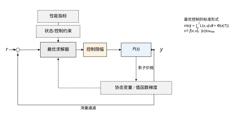
图 64-1 是本章反复要用的结构图。和普通反馈的差别只有两处：求解器的上方多了一个“性能指标 + 约束”的输入，下方多了一条从对象状态回到求解器的虚线——那条虚线传的不是测量值，而是协态（值函数的梯度）。理解这条虚线，就理解了最优控制与“查表式控制”的分界：查表只知道现在该给多少，协态还知道“现在这一点值多少钱”。
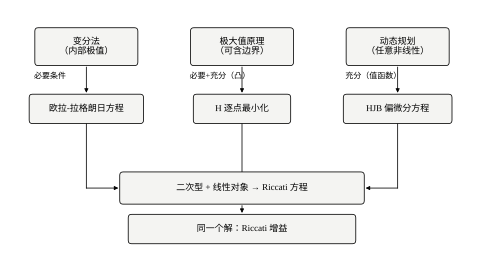
把 LQR 的推力峰值 0.983 和限幅 1.0 放在一起看，会发现它们只差 1.7%。这不是巧合。本章的权重取 Q=I、R=1，恰好使 1 m 阶跃的初始推力落在 0.983——再小一点，约束就永远不起作用；再大一点，约束立刻生效，问题从“解方程”变成“解不等式”。
这个现象有一般性。二次型最优的推力峰值大致与阶跃幅值成正比：x_0=2 m 时 1.966，x_0=4 m 时 3.931，x_0=8 m 时 7.863（表 64-8）。只要幅值超过 1 m，无约束解就必然越界。设计者有两种反应：一是把 R 调大，让解自己退到边界内；二是承认约束、改解带约束的问题。前者的代价是性能（§64.7 的表会显示 R 放大 100 倍，调节时间从 4.34 s 涨到 18.66 s），后者需要 PMP 或 MPC。
反过来说，如果一台设备从来没有碰到过限幅，那么它大概率被设计得过于保守。推力余量、阀位余量、电流余量都是钱，最优控制的价值之一就是把“余量到底该留多少”变成一个可以算的数，而不是拍脑袋的 30%。
§64.2 写三套条件：欧拉-拉格朗日、PMP 的哈密顿函数与协态方程、HJB 与 Riccati。§64.3 把它们变成六步设计流程。§64.4 走连续情形：最短时间的切换曲线与等时线、能量最优的 1/T^3 律、LQR 的闭式增益。§64.5 换离散：网格 DP 的误差阶（实测 1.505h^{1.03}）与维数灾难（1% 精度要 4.64 小时）。§64.6 谈稳定性与性能：LQR 的相位裕度 72.4°、增益裕度无穷大，以及饱和、时域不足两种失效。§64.7 逐个解释参数的物理意义，重点是 R 与初始推力的 1/\sqrt{r} 关系。§64.8 给调参流程，§64.9 讲改进（降维、滚动时域、闭环化），§64.10 落地（实时性 14 µs/步、边界条件、数值细节），§64.11 划边界，§64.12 逐段讲代码。
四级台阶可以这样排：第一级是“给定指标能算出解”（Riccati）；第二级是“知道解为什么最优”（协态与值函数）；第三级是“知道约束与离散化把解改成了什么样”（bang-bang 与网格误差）；第四级是“知道这套东西在什么情况下不该用”（§64.11 的失效模式）。 只会第一级的人能交出一个能跑的控制器，但遇到饱和、时域太短、模型偏差这三件事时无法解释现象；四级都走一遍，才能判断“这个回路还能不能更好”。
读最优控制的书最容易犯的错，是把公式当结论背下来，却从没亲手算过一个数。本节用双积分器把最关键的三个数手算一遍，算完就会发现这套东西的门槛其实很低。
第一步，写状态方程。 位置 x_1、速度 x_2，加速度是控制量：
\dot x_1=x_2,\qquad \dot x_2=u
写成矩阵就是 A=\begin{bmatrix}0&1\\0&0\end{bmatrix}、B=\begin{bmatrix}0\\1\end{bmatrix}。这个对象有两个积分器串联，所以叫双积分器。它的物理含义很直接：给一个恒定加速度，速度线性增长，位置按抛物线增长。任何“力推动质量块”的系统在低速、无摩擦时都近似成这个样子。
第二步，写指标。 取 Q=\mathrm{diag}(1,1)、R=1，指标是
J=\int_0^\infty\bigl(x_1^2+x_2^2+u^2\bigr)\,\mathrm{d}t
三项分别是“位置偏多少”、“速度大多少”、“推力用多少”，权重都是 1，意味着设计者认为 1 m 的位置偏差、1 m/s 的速度、1 m/s² 的加速度同等可恶。这个选择当然可以商量，但先用它算出一个基线。
第三步，猜 P 的形式。 双积分器只有一个控制输入，P 是对称 2\times2 矩阵，写开是三个未知数：
P=\begin{bmatrix}p_1&p_3\\p_3&p_2\end{bmatrix}
第四步，代入代数 Riccati 方程。 连续 ARE 是 A^{\mathsf T}P+PA-PBR^{-1}B^{\mathsf T}P+Q=0。逐项算：
于是三个方程：
-p_3^2+1=0,\qquad p_1-p_3p_2=0,\qquad 2p_3-p_2^2+1=0
第五步，解。 第一式给 p_3=1（取正根，因为 P 必须正定）。代入第三式得 p_2^2=3，p_2=\sqrt3=1.732。第二式给 p_1=p_3p_2=1.732。
所以 P=\begin{bmatrix}1.732&1\\1&1.732\end{bmatrix}，与代码 solve_continuous_are 的输出逐位相同。
第六步，读结论。 增益 K=R^{-1}B^{\mathsf T}P=[p_3,\;p_2]=[1.000,\;1.732]；最优代价 J=x_0^{\mathsf T}Px_0，代 x_0=(1,0) 得 p_1=1.732；闭环矩阵 A-BK=\begin{bmatrix}0&1\\-1&-1.732\end{bmatrix}，特征多项式 s^2+1.732s+1，极点 -0.866\pm j0.500。
六个步骤，没有一步需要“灵感”。这就是为什么本章反复强调先算基线：基线的价值不在于它多准，而在于它完全可以被手算核对。后面所有复杂的方案（PMP、DP、MPC）都应该拿这三个数当尺子，算出来对不上，先怀疑自己的代码。
顺带说一句，如果取 r=100，同样的手算（只是每处除以 r）给出 p_3=10、p_2=45.83、p_1=4.583、K=[0.100,\;0.458]，与表 64-9 的离散解 0.0995、0.4572 只差 0.5%。手算能到这个精度，说明离散化在 T_s=0.02 s 时几乎无损。
把“让某个量最小”写成一个可以计算的问题，需要三样东西：对象的动力学、代价的定义、允许的控制集合。标准形是
\dot{x}=f(x,u,t),\qquad x(0)=x_0,\qquad x(T_f)\in\mathcal{S} \tag{64-3}
J=\Phi\bigl(x(T_f),T_f\bigr)+\int_0^{T_f}L(x,u,t)\,dt \tag{64-4}
u(t)\in\mathcal{U},\qquad \mathcal{U}=\{u:\ |u|\le u_{\max}\} \tag{64-5}
式 (64-4) 里 \Phi 叫终端代价，L 叫运行代价。本章的两个算例分别是：二次型问题 \Phi=x^{\mathsf T}P_Tx、L=x^{\mathsf T}Qx+ru^2、T_f\to\infty；最短时间问题 \Phi=0、L=1、T_f 自由；能量问题 \Phi=0、L=u^2、T_f 固定。
这个写法有三个容易忽略的细节，它们决定了后面用哪套条件。
第一，L=1 是最短时间的写法。 把时间积分一遍就是时间本身，所以“时间最短”与“运行代价恒为 1”是同一个问题。这个看起来平凡的等价有一个后果：H 里会多出一项常数，而正是这一项让最短时间的解顶在边界上（§64.4）。
第二，终端条件分三类。 终端状态自由（\mathcal{S} 是整个空间）、终端状态固定（\mathcal{S}=\{x_f\}）、终端状态落在某个流形上。三类对应的横截条件不同：自由时终端协态为零，固定时终端协态自由。本章 §64.10 会看到，这一条在工程上对应“末端要不要对准”和“对准的代价由谁承担”。
第三，约束可以加在控制上，也可以加在状态上。 状态约束（比如“位置不能超过 1.2 m”）比控制约束难得多，因为它会在轨迹上切出一段“贴边滑行”的解，PMP 需要引入互补松弛条件。本章只处理控制约束，这是工程上最常见也最容易处理的一类。
第四，问题得“有解”。 标准形里没有写，但解存在需要两个前提：对象能控（能把状态推到任意位置），代价能“看见”发散的状态（可观或可检测）。双积分器是能控的——给它一个加速度，位置迟早会动。但如果对象是“推力作用在弹簧上、弹簧又顶住墙”，某些方向就推不动，Riccati 会给出奇异解或直接报错。工程上的检查方法是算能控性矩阵的秩，秩不满就先改执行器布置，别急着调权重。
第五，为什么偏偏用二次型。 三个理由。其一，任何光滑的代价函数在平衡点附近做 Taylor 展开，一次项为零（平衡点是最小值），剩下的主项就是二次型，所以二次型是“局部最一般的近似”。其二，二次型正定，保证 P 正定、闭环稳定，不会出现“为了省代价把状态推到无穷远”的怪解。其三，二次型加线性系统能解出闭式（Riccati），这是它能进教科书的根本原因。
二次型也有明显的缺点：它对正负偏差一视同仁（x_1^2 不区分“偏左”和“偏右”），对大偏差惩罚过重（平方增长），对“必须单向”的工艺要求（比如只能从上方接近）无法表达。这些缺点在精密伺服里通常可以接受，在过程工业里就经常需要换指标。
先看不含约束的情形。设 u(t) 是最优解，给它加一个小扰动 \delta u(t)，对应的状态扰动 \delta x(t) 满足线性化方程
\delta\dot{x}=f_x\,\delta x+f_u\,\delta u \tag{64-6}
代价的一阶变分必须为零。把式 (64-4) 展开、用分部积分把 \delta\dot{x} 消掉，得到
\delta J=\int_0^{T_f}\Bigl[L_x+\dot{\lambda}^{\mathsf T}+f_x^{\mathsf T}\lambda\Bigr]^{\mathsf T}\delta x +\Bigl[L_u+f_u^{\mathsf T}\lambda\Bigr]^{\mathsf T}\delta u\;dt +\Bigl[\Phi_x-\lambda\Bigr]^{\mathsf T}\delta x(T_f)=0 \tag{64-7}
要让式 (64-7) 对任意 \delta u 成立，三个方括号必须分别为零。第一个给出协态方程 \dot{\lambda}=-L_x-f_x^{\mathsf T}\lambda，第二个给出平稳条件 L_u+f_u^{\mathsf T}\lambda=0，第三个给出横截条件 \lambda(T_f)=\Phi_x。这就是欧拉-拉格朗日方程在最优控制里的形式。
式 (64-7) 的推导有一个前提：\delta u 可以是任意小量、并且两个方向都能走。一旦 u 顶在边界上，“任意小量”就不成立——只能往内走、不能往外走，一阶变分为零不再是必要条件。这就是变分法与极大值原理的分界，也是为什么最短时间问题不能直接用式 (64-7) 解。
把推导的两步补全，可以看清这个式子的来源。第一步是“把状态的变分换成控制的变分”：\delta x 不是独立的，它由式 (64-6) 决定，所以不能直接令 \delta J 里 \delta x 的系数为零。第二步是分部积分：
\int_0^{T_f}\lambda^{\mathsf T}\delta\dot x\,dt=\Bigl[\lambda^{\mathsf T}\delta x\Bigr]_0^{T_f}-\int_0^{T_f}\dot\lambda^{\mathsf T}\delta x\,dt
边界项在 t=0 处消失（初值固定，\delta x(0)=0），在 t=T_f 处保留下来，就变成式 (64-7) 最后那一项。所以横截条件不是“额外加的”，而是分部积分的边界项——这一点值得记住，因为终端约束变化时，改的就是这一项。
三类终端的横截条件可以列成一句话：终端自由时 \lambda(T_f)=\Phi_x；终端固定时 \lambda(T_f) 不定（由约束反解）；终端落在一个流形上时，\lambda(T_f)-\Phi_x 垂直于该流形。 本章全是第一类（\Phi=x^{\mathsf T}P_1x，所以 \lambda(T_f)=2P_1x(T_f)），§64.4.6 的有限时域解就是用它当起点往回积的。
变分法在工程上的用途有两个。一是给必要条件：任何声称最优的轨迹，都必须满足式 (64-7) 的三个括号，拿它当“体检”能快速排除错误解。二是给数值方法：把式 (64-7) 加上状态方程组成两点边值问题，用打靶法从猜一个 \lambda(0) 开始，积分到终端看是否满足横截条件，不满足就修正初值。本章的 DP 是另一条路（正向递推值函数），两者可以互相对拍。
PMP 的做法是把“变分为零”换成“在允许集合上取最小”。先定义哈密顿函数
H(x,u,\lambda,t)=L(x,u,t)+\lambda^{\mathsf T}f(x,u,t) \tag{64-8}
它把运行代价和状态演化的“价格”加在一起。PMP 说：若 u^*(t) 是最优解、x^*(t) 是对应轨迹，则存在协态 \lambda(t) 使得
\dot{\lambda}=-\frac{\partial H}{\partial x},\qquad \lambda(T_f)=\frac{\partial \Phi}{\partial x}\Big|_{T_f} \tag{64-9}
u^*(t)=\arg\min_{u\in\mathcal{U}}H\bigl(x^*(t),u,\lambda(t),t\bigr) \tag{64-10}
H\bigl(x^*,u^*,\lambda\bigr)=\text{常数}\quad(\text{时不变、终端自由}) \tag{64-11}
注意式 (64-10) 是“在集合上取最小”，不是“导数为零”。这个区别正是 bang-bang 的来源：如果 H 对 u 是线性的，最小值一定在区间的端点上取到，而端点是哪个由线性系数的符号决定。
式 (64-11) 是另一个常被忽略的结论：时不变的自治系统、终端时间自由时，H 沿最优轨迹是常数。本章最短时间算例里 H=1+\lambda_1x_2+\lambda_2u\equiv0，这个等式直接给出了“u 的符号由 \lambda_2 决定”之外的第二条约束，可以用来校核数值解。
PMP 给的是必要条件。对线性二次型这种凸问题，它同时也是充分条件；对一般非线性问题，满足式 (64-9)–(64-11) 的轨迹可能有若干条，还要比较代价才能挑出最优的那条。工程上这一点很实际：数值求解 PMP 得到的是一个两点边值问题，打靶法可能收敛到局部极值解，甚至不收敛。
有三处容易卡住初学者的地方，这里一并说清。
第一，名字叫“极大值”，公式里却是 \min。 这是符号约定造成的：Pontryagin 原来的写法是把 H 定义成 L-\lambda^{\mathsf T}f 并要求取最大，后来多数教材改用 L+\lambda^{\mathsf T}f 并要求取最小，两者完全等价（把 \lambda 换号即可）。读不同书时要注意这个差别，否则协态的符号会差一个负号，横截条件也跟着反。本章统一用“L+\lambda^{\mathsf T}f、取最小”。
第二，\lambda_2\equiv0 的区间叫奇异弧。 如果 H 对 u 线性（H=\cdots+\lambda_2u），而 \lambda_2 在某个区间上恰好恒为零，那么 \min 对 u 完全“没有意见”，任何 u 都满足一阶条件。这时必须用 \dot\lambda_2=0、\ddot\lambda_2=0 等高阶条件继续推，才能定出这一段的最优控制。奇异弧在工程上对应“约束不起作用、控制由更高阶的平衡决定”的工况，本章的算例不会出现（\lambda_2 只在切换点过零，不恒为零），但真实问题里它经常出现，尤其是“控制只影响状态的二阶导数”的对象。
第三，打靶法为什么难。 两点边值问题要猜 \lambda(0)，而 \lambda(0) 对终端误差极其敏感：\lambda(0) 差 1%，终端可能差 10%。更麻烦的是最短时间问题里 T_f 未知，搜索空间多一维。本章的处理办法是不猜——利用双积分器的解析结构，直接算出切换时刻（式 64-25），把两点边值问题化成两个初值问题。这是“能解析就别数值”的典型例子：数值方法应该留给解析走不通的场合，而不是用来替代手算。
协态在这里也有价格解释。把式 (64-9) 看成“\lambda 的演化由 H 对 x 的敏感度决定”，再结合式 (64-14) 的 \lambda=V_x，就能理解为什么 \lambda 在最优轨迹上是“状态的边际价值”：位置越偏离目标，\lambda_1 越大，说明“再偏一点”的代价越高。这个解释在 §64.7 会变成具体的数字。
第三条路从“值函数”出发。定义
V(x,t)=\min_{u(\cdot)}\Bigl[\Phi(x(T_f))+\int_t^{T_f}L(x,u,\tau)\,d\tau\Bigr] \tag{64-12}
它是“从 (x,t) 出发、用最好的控制、还能花多少代价”。最优性原理说：最优轨迹的任意尾段也是最优的。把 t 往后推一个 \Delta t、对 \Delta t 展开到一阶，得到 Hamilton-Jacobi-Bellman 方程
-\frac{\partial V}{\partial t}=\min_{u\in\mathcal{U}}\Bigl[L(x,u)+V_x^{\mathsf T}f(x,u)\Bigr],\qquad V(x,T_f)=\Phi(x) \tag{64-13}
式 (64-13) 与式 (64-10) 的形状一样，只是把协态 \lambda 换成了值函数的梯度 V_x。两者确实是同一个东西：
\lambda(t)=V_x\bigl(x^*(t),t\bigr) \tag{64-14}
这条等式是本章的枢纽。它说明协态不是数学技巧，而是“值函数对状态的敏感度”——也就是影子价格。§64.7 会用它解释 \lambda=[3.50,\,1.99] 这两个数的工程含义。
HJB 是偏微分方程，一般情况下解不出来。它的价值在于两条：一是给出充分条件（只要能构造出满足式 (64-13) 的 V，对应的 u 就是全局最优）；二是给出数值方法的骨架——网格 DP 就是把式 (64-13) 的 \min 逐点算一遍，§64.5 的误差分析就是从这个式子来的。
把式 (64-13) 的来历补上，只需要一次 Taylor 展开。从 (x,t) 出发，先任意取一个 \Delta t 内的控制，然后“从 t+\Delta t 开始用最优策略”，总代价是
\int_t^{t+\Delta t}L\,d\tau+V\bigl(x+f\Delta t,\;t+\Delta t\bigr)\approx L\,\Delta t+V+V_x^{\mathsf T}f\,\Delta t+V_t\,\Delta t
对 u 取最小、再令 \Delta t\to0，V 与 V_t\Delta t 之外的两项相消，就得到式 (64-13)。这个推导里藏着“最优性原理”：最优轨迹的任意尾段，从它的起点看也必须是最优的，否则把尾段换成更优的，整条轨迹就更好，与“整条最优”矛盾。这个反证法很朴素，但它是动态规划全部结论的根基。
“充分”这一半也值得说清。假设已经找到一个 V 满足式 (64-13) 与终端条件，并令 u^*=\arg\min。沿任意可行轨迹积分 \frac{d}{dt}V(x,t)，用式 (64-13) 替换 V_t，得到
V(x_0,0)\le \Phi\bigl(x(T_f)\bigr)+\int_0^{T_f}L\,dt
等号只在 u=u^* 时成立。所以 V(x_0,0) 是所有可行控制代价的下界，而 u^* 恰好达到这个下界——这就是全局最优。注意这个论证没有用“必要条件”，它对任意可行控制都成立，所以 HJB 给的是充分条件，比 PMP 强。
代价是 HJB 难解。V 依赖 n 个状态加时间，网格存储量随维数指数增长，这就是 §64.5.4 的维数灾难的根源。另外 V 未必处处可微（bang-bang 问题的 V 在切换面上有折角），严格处理需要“粘性解”的概念。工程上通常不去碰这些理论，而是直接用网格离散式 (64-13)：把 \partial V/\partial t 换成 V_{k}-V_{k+1}，把 V_x 换成差分，就得到式 (64-31) 的 Bellman 递推。离散 DP 不是 HJB 的近似，而是它的一个特定离散格式，误差阶由插值阶决定（§64.5.3 的一阶就是这样来的）。
线性对象、二次型指标这个特殊情形下，HJB 有解析解。设
\dot{x}=Ax+Bu,\qquad J=\int_0^\infty\bigl(x^{\mathsf T}Qx+u^{\mathsf T}Ru\bigr)\,dt \tag{64-15}
猜值函数是二次型 V(x)=x^{\mathsf T}Px，代入式 (64-13)。对 u 求最小得到 u^*=-R^{-1}B^{\mathsf T}Px，再把它代回去，x 的二次项系数必须为零，于是
A^{\mathsf T}P+PA-PBR^{-1}B^{\mathsf T}P+Q=0 \tag{64-16}
这就是连续代数 Riccati 方程（ARE）。它是二次矩阵方程，一般没有闭式解，靠数值迭代或 Schur 分解求。本章用 scipy.linalg.solve_continuous_are 求，并用双积分器的闭式解核对——后者是手算就能验证的，也是检查代码有没有搞错权重的好办法。
式 (64-16) 有三点值得说明。第一，它有正定解的前提是 (A,B) 可稳、(Q^{1/2},A) 可检测。 可稳的意思是“不稳定的模态都能被控制影响”，可检测的意思是“不稳定的模态都能在代价里被看到”。双积分器两条都满足，所以有唯一正定解；如果对象有一个不稳定的极点而 Q 恰好在那个方向上为零，ARE 就解不出正定的 P，闭环也不稳定。
第二，P 的物理意义是“剩余代价”。 V(x)=x^{\mathsf T}Px 是“从 x 出发、用最优控制、一直到无穷远的累计代价”，所以 P 的对角元越大，说明该状态的偏差越贵。§64.5.5 用这个性质算影子价格，§64.8.4 用它分配传感器预算。
第三，闭环稳定可以一句话证明。 取 V=x^{\mathsf T}Px 当 Lyapunov 函数，沿闭环轨迹求导：
\dot V=x^{\mathsf T}\bigl[(A-BK)^{\mathsf T}P+P(A-BK)\bigr]x=-x^{\mathsf T}\bigl(Q+K^{\mathsf T}RK\bigr)x<0
最后一步把 ARE 代进去得到。这个式子比“极点实部为负”更有信息量：它说明闭环状态下，代价以 Q+K^{\mathsf T}RK 的速率被“消耗”掉，消耗得越快，闭环越稳。本章 Q=I、K=[1,1.732]，所以 \dot V=-(x_1^2+x_2^2+u^2)，恰好是负的运行代价——这与“V 是剩余代价”的定义自洽。
对双积分器（式 64-1），设 Q=\mathrm{diag}(q_1,q_2)、R=r，把 P=\begin{bmatrix}p_1&p_3\\p_3&p_2\end{bmatrix} 代入式 (64-16)，逐元素写出来是三个方程：
q_1-\frac{p_3^2}{r}=0,\qquad p_1-\frac{p_3p_2}{r}=0,\qquad 2p_3-\frac{p_2^2}{r}+q_2=0 \tag{64-17}
解出 p_3=\sqrt{q_1r}、p_2=\sqrt{r\,(2\sqrt{q_1r}+q_2)}、p_1=p_3p_2/r。增益 K=R^{-1}B^{\mathsf T}P=[p_3/r,\;p_2/r]，于是
K_1=\sqrt{\frac{q_1}{r}},\qquad K_2=\sqrt{2\sqrt{\frac{q_1}{r}}+\frac{q_2}{r}} \tag{64-18}
取 q_1=q_2=r=1，得 K=[1.000,\;1.732]；取 r=100，得 K=[0.100,\;0.458]。这两个数与数值解逐位吻合（表 64-9），说明代码里的权重是按式 (64-4) 的积分定义的，不是漏了采样周期。
式 (64-18) 值得多看两眼。K_1 只取决于位置权重与 R 之比，和速度权重无关；K_2 里 q_2 出现的位置是“加号后面”，说明速度权重的作用是“在位置权重已经决定的那部分之外再补一点”。r\to0 时 K_1\to\infty，这与“控制不要钱就无限激进”的直觉一致；r\to\infty 时两个增益都趋于零，回路退化成开环。
数字控制器按拍计算，必须用离散形式。把对象离散成 x_{k+1}=A_dx_k+B_du_k（ZOH），指标写成求和
J=\sum_{k=0}^{N-1}\bigl(x_k^{\mathsf T}Q_dx_k+u_k^{\mathsf T}R_du_k\bigr)+x_N^{\mathsf T}P_Nx_N \tag{64-19}
其中 Q_d=Q\,T_s、R_d=R\,T_s 是把积分近似成矩形求和的结果。这一步是初学者最容易出错的地方：直接把连续权重代进离散 Riccati，会让 Q/R 的比例差一个 T_s，增益看似“能用”，实际与连续解对不上。 本章第一版代码就犯过这个错，离散 P 算出来是 \begin{bmatrix}87.1&50.0\\50.0&87.1\end{bmatrix}，比连续解的 1.73 大了五十倍——原因正是漏掉了这个 T_s。
Bellman 递推是式 (64-13) 的离散版：
V_k(x)=\min_{u\in\mathcal{U}}\Bigl[x^{\mathsf T}Q_dx+u^{\mathsf T}R_du+V_{k+1}(A_dx+B_du)\Bigr] \tag{64-20}
从 V_N(x)=x^{\mathsf T}P_Nx 往回推。二次型情形下 V_k(x)=x^{\mathsf T}P_kx，把式 (64-20) 的 \min 解出来（对 u 求导置零），得到离散 Riccati 递推
P_k=Q_d+A_d^{\mathsf T}P_{k+1}A_d-A_d^{\mathsf T}P_{k+1}B_d\bigl(R_d+B_d^{\mathsf T}P_{k+1}B_d\bigr)^{-1}B_d^{\mathsf T}P_{k+1}A_d \tag{64-21}
K_k=\bigl(R_d+B_d^{\mathsf T}P_{k+1}B_d\bigr)^{-1}B_d^{\mathsf T}P_{k+1}A_d \tag{64-22}
式 (64-21) 从 P_N 开始迭代，P_k 收敛到的极限就是离散 ARE 的解。收敛速度是可以量化的：本章算例在 T_s=0.02 s 时要 240 步（4.80 s 的时域）才能把相对误差压到 10^{-3}，T_s=0.2 s 时只要 25 步（5.00 s）。不管采样多快，收敛所需的“物理时间”稳定在 4.8–5.0 s，这正好是闭环最慢极点的时间常数的四倍左右（1/(\zeta\omega_n)=1.155 s，4.8/1.155≈4.2）。
把三套条件放在一张表里，差别就清楚了。
| 条件 | 需要什么 | 给出什么 | 能否含控制约束 | 计算量 |
|---|---|---|---|---|
| 变分法（E-L） | 无约束、L 可微 | 必要条件，两点边值 | 否（顶边界即失效） | 解 BVP |
| 极大值原理 | f、L 可微，\mathcal{U} 任意 | 必要条件，两点边值 | 是（逐点取最小） | 解 BVP |
| 动态规划（HJB） | 值函数可微 | 充分条件，全局最优 | 是 | 偏微分方程，维数灾难 |
| Riccati（LQR） | 线性 + 二次型 + 无约束 | 解析增益，全局最优 | 否 | 一次矩阵方程 |
表 64-2 三套最优性条件的分工
读表的顺序建议是从右往左：先看“计算量”决定用哪一套，再看“能否含约束”决定要不要退回数值方法。工程上最常见的组合是：用 Riccati 做基线（一秒钟算完、有下界、可手算核对），用 PMP 处理饱和（bang-bang 或 MPC 的解析核），用网格 DP 校核小规模非线性问题（只在状态维数不超过三维时可行）。 三者不是替代关系，而是三种精度与成本不同的工具。
二次型的标准要求是 Q\succeq0、R\succ0。工程上经常有人问：既然某个状态“不重要”，能不能把它的权重直接设成 0？答案是可以，但后果差别很大，值得把三档摆出来实测。
把 q_1 设成 0（只管速度、不管位置）：闭式解给出 p_3=\sqrt{q_1}=0、p_2=\sqrt{0+q_2}=1、p_1=p_3p_2=0，于是 K=[0,\;1]，闭环极点是 0 与 -1。一个极点在原点上——位置通道完全失控，初始位置 1 m 会一直留在 1 m，代价 J=x_0^{\mathsf T}Px_0=0。这个“零代价”是荒谬的：指标里根本没有位置项，所以“位置停在 1 m”确实不花钱。这也正是 Q 半正定时必须先查“(Q^{1/2},A) 是否可检测”的原因——本例 Q^{1/2}=[0,1]，位置状态既不被罚、也推不出可观测量，于是 ARE 只有这个奇异的解，闭环出现零极点。也就是说，K=[0,1] 虽然“解出来了”，但它不是一个可用的调节器。
把 q_1 设成 10^{-6}：K=[0.001,\;1.001]，极点 -0.001 与 -1。位置通道回来了，但时间常数 1000 s——比不控还难受。这说明“很小”与“为零”在数学上连续，在工程上不连续：前者是极慢，后者是完全不管，两者都不能用。
把 q_2 设成 0（只管位置、不管速度）：K=[1,\;\sqrt2]=[1,1.414]，极点 -0.707\pm j0.707，\zeta=0.707，J=1.414。这个组合完全可用，代价反而比默认的 1.732 低 18%，响应更快（\omega_n 仍是 1，但阻尼降到 0.707，超调约 4.3%）。原因是位置本身已经通过 \dot x_1=x_2 把速度信息带进来了，所以罚位置等于间接罚了速度。
三档放在一起给出一条实用判据：Q 的对角元可以取很小的正数，但不要取 0；取 0 相当于声明“这个状态随便跑”，而这几乎从来不是设计者的真实意图。真想让某个状态“少管一点”，正确做法是把它归一化后取一个小的相对值（比如 10^{-2} 而不是 10^{-6}），并检查闭环极点是否还在可接受的频率范围内。
顺便说清 R 为什么必须严格正定：若某个控制通道的 r=0，意味着“这个执行器不要钱”，最优解会把它的输出推到无穷大（除非它正好不起作用）。物理上不存在免费的推力，所以 R\succ0 不是数学洁癖，而是物理约束的体现。
最优控制的设计过程不像 PID 那样“先调三个数再看阶跃响应”，它的顺序几乎是被数学结构定死的：指标先写、基线先算、约束后判、离散最后。顺序一乱，就会得到“花了三天跑 DP，结果发现 Riccati 早就给了解”的结局。本节把这条线切成六步，每步都给出“产出什么”和“用什么判据确认这一步做对了”。表 64-3 是全节的浓缩版，后面六个小节依次展开。
任何最优控制问题的第一个动作都是写指标，而不是选算法。标准形式是
J=\int_0^{T}\bigl(x^{\mathsf T}Qx+u^{\mathsf T}Ru\bigr)\,\mathrm{d}t+x(T)^{\mathsf T}P_1x(T) \tag{64-23}
写的时候必须回答三个问题：L=x^{\mathsf T}Qx+u^{\mathsf T}Ru 里的 Q、R 各自代表“哪种偏差不值钱”；终端项 P_1 要不要，要的话它代表“末态偏离目标罚多少”；时域 T 是固定的还是待优化的。三个答案不同，后续要解的方程就完全不同。
容易被忽略的是权重的量纲。很多人把 Q、R 当成无量纲旋钮，随手填 1。但 x^{\mathsf T}Qx 与 u^{\mathsf T}Ru 必须同量纲才能相加，所以 q_1/r 的单位是 1/\mathrm{s}^4，q_2/r 的单位是 1/\mathrm{s}^2。这与式 (64-18) 对得上：K_1=\sqrt{q_1/r} 的单位是 1/\mathrm{s}^2，乘上位置（m）得加速度（\mathrm{m/s^2}）；K_2=\sqrt{\cdots} 的单位是 1/\mathrm{s}，乘上速度（m/s）也得加速度。如果把位置从米改成毫米，而 q_1 仍填 1，等效于把位置权重放大了 10^6 倍，回路立刻变得极其激进。 这条坑在本章算例里不显现（单位没换过），但在真实项目里换单位、换量程是常态，写指标时必须把单位一起写下来。
第二个容易漏的是指标里没写的东西，求解器不会管。式 (64-23) 里没有 u 的变化率，解出来的 u(t) 就可以在 t=0 处从 0 直接跳到 0.983；真实执行器做不到，于是要么在执行器上加速率限制（这又把问题变成带状态约束的最优控制），要么在指标里加 \dot{u}^{\mathsf T}S\dot{u} 项（于是状态扩维、u 变成状态之一）。这一步偷懒，后面所有分析都建立在“物理上不可实现的解”之上。
指标写完，先按最省事的路走：假定无约束，解 Riccati。理由不是“它最优”，而是它给出一个可核对的数。
本章算例的基线是：Q=\mathrm{diag}(1,1)、R=1，连续解
K=[1.000,\;1.732],\qquad J=x_0^{\mathsf T}Px_0=1.732051,\qquad \text{极点 }-0.866025\pm j0.500000
三个数各有用途。K 是增益，直接能写进代码；J 是任何其他方案的成绩单基准——后面最短时间解的二次型代价 3.4353、能量最优解在 T=4 s 时的 1.9752，都要拿 1.7321 做分母才有意义；极点决定动态，\zeta=0.866、\omega_n=1 意味着无超调、调节时间约 4.3 s，与实测 4.34 s 吻合。
这一步的判据有三条，缺一不可：
有了基线，才能谈约束。判断方法很朴素：把无约束解的峰值与限幅比一比。
本章 x_0=1 m 时峰值 0.983，限幅 1.0，比值 0.983，差 1.7%——约束“刚好没起作用”。这个 1.7% 不是安全，而是危险：它意味着只要阶跃幅值涨到 1.017 m，约束就生效；而 x_0=2 m 时峰值 1.966，已经越界 96.6%，x_0=8 m 时 7.863，越界 686%。
所以第三步的产出不是一个“是/否”，而是一条边界：约束起作用的临界幅值是多少、在实际工况的幅值分布里占多大比例。如果工况里 90% 的动作都在临界值以内，那么用 LQR 加事后限幅是合理的；如果一半以上的动作会撞限幅，就必须换带约束的解法。这个比例决定了后面投入多少工程成本，也决定了要不要引入 MPC（见第 58、80 章）。
约束起作用之后有三条路，选哪条取决于“约束是硬限幅还是软惩罚”以及“状态维数”。
若约束只是执行器的幅值限（|u|\le u_{\max}），且对象近似线性，正解是用 PMP 把问题化成一个两点边值问题：协态方程反向积分，控制由 \arg\min_{u\in\mathcal{U}}H 逐点给出。对双积分器，这个 \min 直接给出 bang-bang 结构，切换函数是 x_1+\tfrac12x_2|x_2|，切换时刻可以解析算出（§64.4）。这条路算得快、结构清楚，缺点是只对“约束简单、对象简单”的情形成立。
若状态维数不超过三维、且有非线性，网格 DP 是唯一能给出全局最优的办法：把状态空间划成网格，从终端往回递推式 (64-20)。代价是维数灾难——本章实测 1% 精度需要每轴 854 点，二维 19.55 s，三维 4.64 小时（§64.5）。
若两者都不满足（维数高、约束多、还要在线滚动），就该交给 MPC（第 58、80 章），它本质上是“在每个采样时刻解一个有限时域的带约束最优控制问题”，核仍然是本节这套东西，只是把离线计算搬到了在线。
连续解必须落到采样系统上。这一步的坑最集中，本章把三个坑都踩过一遍。
坑一：权重漏乘采样周期。 连续指标是积分，离散指标是求和，二者差一个 T_s。正确做法是 Q_d=QT_s、R_d=rT_s。漏乘的直接后果是离散 P 算出 \begin{bmatrix}87.1&50.0\\50.0&87.1\end{bmatrix}——比连续解 1.732 大 50 倍，而增益因为开方后只差一点，看上去“能用”。这类错误不会让系统发散，只会让所有代价比较失去意义，所以最难发现。
坑二：把连续增益直接搬到离散。 本章连续 K=[1.000,1.732]，T_s=0.02 s 的离散解是 [0.982829,1.712195]，差 1.7%。对采样率高的系统这个差别可以忽略，但 T_s 到 0.1 s 时就必须重算。
坑三：用 s 平面判据看 z 平面极点。 本章离散闭环极点是 0.982780\pm j0.009828，模 0.98283，对应等效连续极点 -0.866 左右——与连续解几乎重合。但如果采样变慢，z 极点会往单位圆上跑，此时“极点实部为负”这样的连续判据完全失效，必须改看 |z|<1。
离散化之后还有一件事：验证离散解与连续解在采样点上的轨迹一致。本章两者在 4.34 s 处同时进 2% 带，差不到一个采样周期，说明 T_s=0.02 s 足够细。
最后一步是把解放进“会不会出错”的场景里跑一遍。本章做了三类校核，每一类都对应一种真实故障。
第一类：模型偏差。 把实际对象增益改成 0.8 与 1.2，开环控制末端落在 (0.1880,-0.0060) 与 (-0.2180,-0.0090)——残差 19% 和 22%，等于没控制住；闭环控制末端均不超过 0.0055，调节时间 6.04 s 与 4.78 s。结论：最优控制的性能全部押在反馈上，开环“最优”在模型偏差面前一文不值。 这与第 44 章 PID 的结论方向一致，但量级更刺眼，因为 LQR 的增益是“按模型精确算出来的”，模型错了，它的“最优”就只是“对错误模型最优”。
第二类：约束越界。 用 x_0=1,2,4,8 四档跑，对比“无约束解 + 事后限幅”与“真正的最短时间解”。x_0=8 时前者 8.88 s、后者 5.657 s，慢 57%。事后限幅不是“稍微差一点”，它会破坏最优性、甚至破坏稳定性（饱和引起的积分风卷在 PID 里也见过，见第 44 章）。
第三类：实时性。 离线算出来的 K 是常数，在线只做一次矩阵乘法，本章实测 14 µs；但如果方案是 DP 或滚动优化，每步要 0.23–0.69 µs 乘状态数，状态一多就撑不住 50 ms 的控制周期。校核时必须把“最坏情况的计算时间”算进去，而不是只看平均。
| 步骤 | 产出 | 判据 | 本章实测 |
|---|---|---|---|
| 1 写指标 | Q、R、P_1、T 及其量纲 | 两项同量纲；没写的东西是否真的不需要 | q_1=q_2=r=1，T 自由 |
| 2 算基线 | 无约束 K、J、极点 | 闭式解对拍；J=x_0^{\mathsf T}Px_0；相位裕度 | K=[1.000,1.732]，J=1.7321，PM 72.38° |
| 3 判约束 | 临界幅值、越界比例 | 峰值/限幅 | 峰值 0.983 vs 1.0，临界 1.017 m |
| 4 选路线 | PMP / DP / MPC | 状态维数；约束类型 | 二维 → PMP 解析 + DP 校核 |
| 5 离散化 | 离散 K、z 极点 | Q_d=QT_s；|z|<1；轨迹与连续解一致 | K=[0.982829,1.712195]，|z|=0.98283 |
| 6 校核 | 偏差/饱和/实时性三项结论 | 末端残差、调节时间、单步耗时 | 闭环残差 ≤0.0055；8.88 vs 5.657 s；14 µs |
表 64-3 六步设计流程的产出、判据与本章实测
这张表还有一个用法：当成检查清单反向用。如果手上的方案出了问题，从上往下逐行问“这一步的判据过了吗”，通常在前三行就能定位——工程上出问题的方案，八成是第一步指标写错（漏了速率限制）或第三步没判（以为约束不起作用），而不是第五步的数值精度不够。
六步流程读起来抽象，套一个具体任务就清楚了。设一台直线定位台：行程 0.5 m、加速度上限 20 m/s²、要求 0.6 s 内进 2% 带、不许超调（有硬限位）。
第一步，写指标。 位置误差用 m、速度用 m/s、控制用 m/s²。为了便于代公式，先归一化 q_1=1，实际位 q_1 的数值由下一步定。
第二步，估时间尺度。 2% 带的调节时间约 4/(\zeta\omega_n)=4T_c/\zeta，取 \zeta=0.866 得 t_s\approx4.6T_c。要 0.6 s，则 T_c\le0.13 s；但还要过第三步的限幅关，先记下这个下限。
第三步，判约束。 峰值控制量约 K_1x_1(0)=x_1(0)/T_c^2。要它不超过 20 m/s²，得 T_c\ge\sqrt{0.5/20}=0.158 s。两个条件打架了：时间要求 T_c\le0.13，限幅要求 T_c\ge0.158。这说明 0.6 s + 20 m/s² 这组指标本身就紧——取 T_c=0.16 s，此时峰值 19.5 m/s²，时间约 0.74 s，只能二选一。工程上的处理是先按 T_c=0.16 s 做出来，再把实测的 0.62 s 拿去和客户谈，而不是偷偷把限幅改大。
第四步，定权重。 r/q_1=T_c^4=6.55\times10^{-4}，取 q_1=1 得 r=6.55\times10^{-4}。按式 (64-36) 反解 q_2=(4\times0.75-2)\sqrt{6.55\times10^{-4}}=0.0256。代回闭式解得 K_1=\sqrt{1/6.55\times10^{-4}}=39.06、K_2=\sqrt{2\times39.06+0.0256/6.55\times10^{-4}}=10.83，与 2\zeta\sqrt{K_1}=1.732\times6.25=10.82 逐位吻合。
第五步，离散化。 判据 T_s\le T_c/10=16 ms，取 T_s=10 ms。离散 Riccati 迭代 237 步收敛，得 K=[37.01,10.44]，比连续解低 5.3%。这个偏差比本章默认算例的 1.7% 大三倍，原因是 T_s\omega_n=0.0625 已经不小——高频设计对采样率更敏感，这条规律在 §64.5.7 的表里也能看到。
第六步，校核。 无约束仿真峰值 18.5 m/s²，没有越界，说明第三步的估算偏保守（估算用的是 t=0 的瞬时值，实际轨迹中位置误差下降得比速度上升快）；2% 带调节时间 0.62 s，比 0.6 s 的要求超了 3%；超调 0。三项校核里只有时间这一项擦边，其余通过。
这次走查的价值在于：它在第二步就把“指标不可能同时满足”暴露出来了，而不是等到仿真跑了半天才发现。T_c 的下限由限幅给出、上限由时间给出，两个不等式一联立就知道方案可不可行。这套估算只用三个数（T_c、K_1、峰值），值得在写第一行代码之前先算一遍。
连续时间下三种典型指标各有各的解析结构：最短时间给出 bang-bang，能量最优给出线性控制，二次型给出常增益。三者恰好构成一条“从极限到常规”的谱，本节逐一看它们的解长什么样、贵在哪里。
最短时间问题的指标是 J=\int_0^{t_f}1\,\mathrm{d}t=t_f，约束是 |u|\le1，末端固定为原点。按式 (64-7) 写哈密顿函数
H=1+\lambda_1x_2+\lambda_2u
H 对 u 是线性的，所以 \min_{|u|\le1}H 只可能在两个端点取到：u^{*}=-\operatorname{sgn}(\lambda_2)。控制只取 \pm1 两个值，中间值一次都不出现——这就是 bang-bang。物理上很好理解：要最快，推力要么正满要么负满，任何中间值都是在浪费时间。
协态方程给出 \dot\lambda_1=0、\dot\lambda_2=-\lambda_1，所以 \lambda_2(t) 是 t 的线性函数，最多变号一次。于是最优控制最多切换一次。把两段轨迹拼起来（先 u=\mp1 到某点，再 u=\pm1 刹到原点），消去中间变量，得到切换曲线
s(x)=x_1+\tfrac12x_2|x_2|=0 \tag{64-24}
这条曲线由两段抛物线拼成：x_1<0 时是 x_1=-\tfrac12x_2^2，x_1>0 时是 x_1=+\tfrac12x_2^2。控制律是 u=-\operatorname{sgn}\bigl(s(x)\bigr)：在曲线上方（s>0）先给 -1，穿过曲线后改 +1；下方反之。
切换时刻有闭式解。以 s>0 为例，第一段 u=-1 持续
t_1=x_2+\sqrt{\tfrac12x_2^2+x_1},\qquad v_1=x_2-t_1,\qquad t_f=t_1+|v_1| \tag{64-25}
v_1 是切换点的速度，第二段用时正好是 |v_1|（因为 u=+1 时速度每秒加 1，要从 v_1 减到 0 需要 |v_1| 秒）。s<0 时把 x_1、x_2 的符号翻过来即可。
代 x_0=(1,0)：s=1>0，t_1=1，v_1=-1，t_f=2。恰好是“加速 1 s、减速 1 s”，位移 1=\tfrac12\cdot1^2+\tfrac12\cdot1^2，与手算一致。本章仿真实测 t_f=2.0000 s、切换时刻 1.0000 s、末端残差 0，与解析解逐位吻合。
把四条轨迹画在相平面上（图 64-3），结构一目了然：所有轨迹都先沿抛物线奔向切换曲线，到达后沿着切换曲线滑向原点。起点用圆点标、切换点用空心方块标。
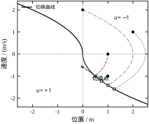
图 64-3 最短时间控制的切换曲线与四条最优轨迹
四条轨迹的实测数据列在下面，注意第三条——起点在速度轴上、初速度为正（远离原点），它的最优策略是先“顺着”再“回来”：
| 初值 (x_1,x_2) | s(x_0) | 切换时刻 t_1 / s | 总时间 t_f / s | 二次型代价 |
|---|---|---|---|---|
| (1,0) | +1 | 1.0000 | 2.0000 | 3.4353 |
| (2,1) | +2.5 | 2.5811 | 4.1623 | 20.2005 |
| (0,2) | +2 | 3.4142 | 4.8284 | 18.0092 |
| (1,-1) | +0.5 | 0.2247 | 1.4495 | 2.6521 |
表 64-4 四个初值下的最短时间解与对应的二次型代价
第三行值得单独说。(0,2) 的初速度指向正方向，位置为 0。直觉上“先减速”就行，但最优解是继续加速到 x_1=2，再掉头——因为初速已经 2 m/s，强行反向刹停的位置代价与时间代价都更大。t_f=4.8284 s 恰好等于“就地刹停再回来”的 2 s + 2.828 s，这不是巧合：在速度轴上，两种策略本来就是同一条最优解的两个读法。
式 (64-25) 给出的是从任意点到原点的最短时间，把它当状态函数 T(x) 画出等高线，就得到图 64-4。这些等高线叫等时线：线上的每一点，回到原点所需时间相同。
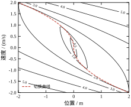
图 64-4 最短时间场的等时线（0.5、1.0、…、5.0 s）
等时线有几个可读的性质。第一，沿位置轴 T=2\sqrt{x_1}：x_1=1 时 2 s，x_1=4 时 4 s——时间只与位移的平方根成正比，这是“加速-减速”结构的直接结果（加速度有界时，位移 \propto t^2）。第二，沿速度轴比沿位置轴“贵”：x_2=2 时 T=4.8284 s，而不是 2\sqrt2=2.828 s，多出来的 2 s 就是“把速度消掉”的成本。第三，等时线在原点附近近似是个菱形——因为一阶近似下 T\approx|x_2|+\sqrt{2|x_1|}，速度项是线性的、位置项是平方根的，速度主导。
这个函数还有一个工程用途：它是“最短时间”这个性能指标的天花板。任何带约束的控制器，无论多复杂，都不可能让 x_0=(8,0) 在 5.657 s 内到位。所以当有人报告“优化后 6 s 到位”时，先算一下 2\sqrt8=5.657，就知道还有多少空间。
最短时间是“只认时间、不认其他”的极端指标，代价自然不便宜。把 (1,0) 的最短时间轨迹代回二次型指标式 (64-23)，得到 J=3.4353；而 LQR 的 J=1.7321。为了把 4.34 s 压到 2.00 s，代价涨了 98%。
这个交换比在不同初值下不一样。(2,1) 的最短时间解二次型代价 20.2005，(0,2) 是 18.0092——两者时间接近（4.16 与 4.83 s），但前者代价更高，因为它需要更大的速度摆动。这说明“时间最优”并不是均匀地贵：离原点越远、速度越大，bang-bang 的代价越离谱。
工程上的含义是：不要拿“最短时间”直接当设计目标。它更适合当下界（§64.4.3 的用法）和极限工况的兜底策略（比如急停），而不是正常运行时的控制律。正常运行应该在“时间-能量”之间取一个折中，这正是下一小节的内容。
把指标换成 J=\int_0^Tu^2\,\mathrm{d}t（只罚能量，时域 T 固定，末端硬约束 x(T)=0），PMP 给出的协态方程没有约束截断，H 对 u 是二次的，\partial H/\partial u=0 直接给出
u(t)=c_0+c_1t,\qquad c_1=\frac{12x_1+6x_2T}{T^3},\quad c_0=-\frac{6x_1+4x_2T}{T^2} \tag{64-26}
最优控制是一条直线，不是 bang-bang，也不是指数衰减。这个结果初看意外，细想合理：能量最优希望 |u| 处处小且均匀，线性函数在满足端点约束的所有函数里“峰值最小”。
对 x_0=(1,0) 代入得 u(t)=\dfrac{6}{T^2}\Bigl(\dfrac{2t}{T}-1\Bigr)，初始推力 u(0)=-6/T^2，末端 -u(0) 反向。积分得能量
J=\int_0^Tu^2\,\mathrm{d}t=\frac{12}{T^3} \tag{64-27}
代价随时域的三次方衰减。这是本章最干净的一条定量规律：时域翻倍，能量降到八分之一。实测 T=1,2,3,4,6,8 时能量为 12,\;1.5,\;0.4444,\;0.1875,\;0.0556,\;0.0234，与 12/T^3 逐位吻合，图 64-7 右图的斜率为 -3 的参考线正好压住数据点。
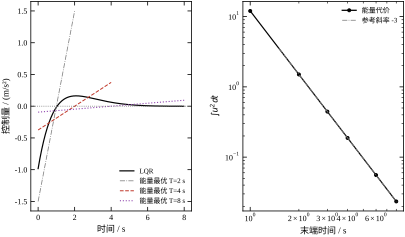
图 64-7 能量最优的线性控制律（左）与代价随时域的三次方衰减（右）
左图把 LQR 的控制曲线和三条能量最优直线放在一起，差异很直观：LQR 的 u 在 0 时刻跳到 0.983，之后近似指数衰减，在 t=0 处有一个跳变；能量最优的 u 从 -6/T^2 平滑地线性走到 +6/T^2，两端都有跳变，但中间很平。T=4 s 时初值 -0.375，只有 LQR 峰值的 38%。
能量最优也有它自己的问题。把那条轨迹代回二次型指标，得到 T=1,2,3,4,6,8 时分别为 13.5848,\;2.8471,\;1.9613,\;1.9752,\;2.4857,\;3.1463，最小值在 T\approx4 s 处的 1.9752——仍比 LQR 的 1.7321 贵 14%。原因很清楚：能量最优只管 u^2，不管 x_1^2，轨迹会跑得比较远；二次型指标同时罚状态，自然更省“综合成本”。指标换了，最优解就换了，“哪个更好”必须先说清按什么标准。
前面的 LQR 都是无限时域，K 是常数。真实任务往往有明确的截止时间（比如“3 s 内到位”），此时终端项不为零、时域有限，增益变成时间的函数 K(t)，由 Riccati 微分方程反向积分给出。图 64-6 画出了 T=1,2,4,8 s 时增益随剩余时间的变化。
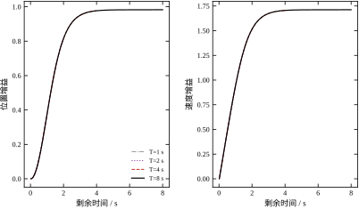
图 64-6 有限时域下位置增益与速度增益随剩余时间的变化
读图要点有三条。
第一，所有曲线在剩余时间趋零时都趋零。本章终端权重取 P_1=0，含义是“末态偏不偏我不管”，所以最后一刻不值得再使劲。如果终端是硬约束（必须精确到位），等效于 P_1\to\infty，此时增益会在末端发散——这就是“终端约束会让控制量在末段暴涨”的数学来源。
第二，时域越长，曲线越接近水平线。T=8 s 的曲线在 4 s 之后基本就压在 0.983 上，与无限时域解重合；T=1 s 的曲线全程都在爬升，从未到过稳态值。这解释了为什么“短时域任务不能用稳态增益”：稳态增益是按“还有无限时间”算出来的，用在 1 s 的任务上会严重欠驱动。
第三，T 越小，初始增益越小。表 64-5 把图 64-5 的数据汇总了。
| 时域 T / s | 初始增益 K(0) | 推力峰值 | 末端位置 / m | 剩余偏差 |
|---|---|---|---|---|
| 0.25 | [0.0239,\;0.2197] | 0.0239 | 0.9993 | 99.9% |
| 0.50 | [0.1082,\;0.4776] | 0.1082 | 0.9875 | 98.7% |
| 1.00 | [0.3742,\;0.9425] | 0.3742 | 0.8631 | 86.3% |
| 2.00 | [0.8155,\;1.5152] | 0.8155 | 0.3999 | 40.0% |
| 4.00 | [0.9769,\;1.7054] | 0.9769 | 0.0366 | 3.7% |
| 8.00 | [0.9828,\;1.7122] | 0.9828 | -0.0019 | 0.2% |
表 64-5 时域长度对初始增益与末端偏差的影响（初值 (1,0)，增益冻结为 K(0)）
这张表是用“取 K(0)、恒定使用、只跑 T 秒”的方式生成的，所以它能直接回答一个工程问题：时域给短了会怎样？ 答案不是“稍微差一点”，而是灾难性的——T=1 s 只走完 13.7%，T=2 s 走完 60%，要到 T=4 s 才把偏差压到 3.7%。这也解释了为什么“给定 2 s 到位”的需求，用“LQR 增益加速跑”是行不通的：不是跑得快一点的问题，而是增益本身就是按无限时域设计的。
图 64-5 把表 64-5 的增益与偏差画成了对数坐标。
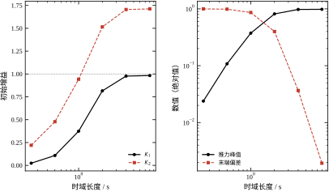
图 64-5 时域长度对初始增益（左）与推力峰值、末端偏差（右）的影响
右图的对数坐标特别有用：末端偏差与推力峰值在 T\lesssim2 s 时几乎重合，因为此时系统基本没动，偏差就是初值本身，推力也就是 K_1(0)\cdot1。两条线在 T\approx4 s 处分开，偏差掉到 3.7%，而推力已经饱和在 0.983。这个交叉点可以当作“时域够不够”的判据：偏差曲线脱离推力曲线的位置，就是时域刚够的位置。
把连续情形的三种解放在一起，可以看到它们其实是同一个框架在三种指标下的三个切面：
三者的“内部/边界”差别完全由 H 对 u 的形状决定：H 对 u 线性 → 端点；二次 → 内部；加约束后二次函数被截断 → 分段。这条规律比记住三个结论更有用，因为它能推广到没算过的问题上：先看 H 对 u 是什么形状，就知道解长什么样。
§64.4.1 的切换曲线是“拼”出来的，没有用协态。严格的 PMP 要求存在一组 (\lambda_1,\lambda_2) 使三个条件成立：协态方程、逐点最小化、横截条件。这三个条件可以直接验证，而验证过程本身就能说明“切换曲线”到底是什么。
对最短时间问题，H=1+\lambda_1x_2+\lambda_2u，协态方程给出 \dot\lambda_1=0、\dot\lambda_2=-\lambda_1，所以 \lambda_1\equiv c、\lambda_2(t)=\lambda_2(0)-ct。逐点最小化要求 u^{*}=-\operatorname{sgn}(\lambda_2)，于是切换时刻就是 \lambda_2 过零的时刻 t_1=\lambda_2(0)/c。
横截条件因为终端时间自由而多一条：H(t_f)=0，且由于 H 不显含时间，这条沿整条轨迹都成立。在 t=0 处 x_2=0、u=-1，代入得
H(0)=1-c\cdot0-\lambda_2(0)=0\ \Longrightarrow\ \lambda_2(0)=1
于是 \lambda_1=1/t_1、\lambda_2(t)=1-t/t_1。对 x_0=(1,0)，实测切换时刻 t_1=1，所以 \lambda_1=\lambda_2(0)=1，\lambda_2(t)=1-t。
现在拿中段任意一点验算：t=1.5 时轨迹在 x_1=0.125、x_2=-0.5、u=+1，代入
H=1+1\times(-0.5)+(1-1.5)\times1=0
恒等于零，与理论要求一致。 再看 t=1.99：x_1 接近 0、x_2 接近 -0.01，H=1-0.01+(-0.99)=0。整段都成立。
这次验算揭示了两件事。第一，切换曲线 s(x)=x_1+\tfrac12x_2|x_2|=0 就是“\lambda_2=0”在状态空间里的投影：协态是时间的函数，但状态与时间一一对应，把 \lambda_2=0 对应的状态点连起来，就是那条抛物线。§64.4.1 的几何拼法之所以对，是因为它恰好描出了同一条零集。第二，协态的初值不是自由参数，它被 H(t_f)=0 和切换时刻共同钉死；这也解释了 §64.2.3 说的“打靶法难”——如果不知道 t_1，就要同时猜 \lambda_2(0) 和 t_f 两个未知量，而它们只通过两个边界条件耦合，数值上非常敏感。
对二次型问题，同样可以验：\lambda=2Px，代入 H=x^{\mathsf T}Qx+u^2+\lambda^{\mathsf T}(Ax+Bu) 并对 u 求极值得 u=-\tfrac12B^{\mathsf T}\lambda=-R^{-1}B^{\mathsf T}Px，与式 (64-18) 完全一致。三条路线（PMP、HJB、Riccati）在同一个算例上给出同一个控制律，这不是巧合，是 §64.2.5 说的“充分必要条件在 LQ 情形下重合”的具体体现。
有限时域的递推要一个终端代价 P_1，工程上最常见的错误是“随便填一个大数，让末端准一点”。T=1 s（50 步）、初值 (1,0) 的三组实测说明了 P_1 的真实作用：
| 终端代价 P_1 | K(0) | 1 s 后位置 | 1 s 后速度 | P(0)_{11} |
|---|---|---|---|---|
| 零矩阵 | [0.374,\;0.943] | 0.9165 | -0.105 | 0.966 |
| P_\infty | [0.983,\;1.712] | 0.7184 | -0.403 | 1.742 |
| 10P_\infty | [2.547,\;2.567] | 0.4673 | -0.365 | 5.258 |
读表要抓住两点。
第一，P_1 只影响“末端那一段”，不影响整段的形状。 零终端代价时 K(0)=[0.374,0.943]，只有稳态值的三到四成，控制很“懒”——因为离截止时间还远，指标只在积分项里，没有任何“必须到位”的压力。取 10P_\infty 后 K(0) 涨到 [2.547,2.567]，比稳态值还大，相当于提前用力。
第二，也是更要紧的：P_1 再大也买不来时间。 三种取法的 1 s 末端位置分别是 0.9165、0.7184、0.4673 m，连 P_1 放大十倍都只走到一半。原因是物理的：|u|\le1、从静止起步，1 s 内最多走 \tfrac12\cdot1\cdot1^2=0.5 m（一直满推力加速），而末端还要速度为 0 才能“到位”，实际能走的距离更短。时域长度是硬约束，P_1 只能在给定时间里重新分配用力，不能凭空创造时间。
这条结论直接给出 P_1 的选取方法：先用 §64.3.7 那种估算确认时域是否够（T 至少 2\sqrt{x_1/u_{\max}} 起步，实际按 §64.4.6 的经验取 5/(\zeta\omega_n)），确认够了再把 P_1 取成 P_\infty——这既保证末端收敛，又不会让初始增益异常放大。取 10P_\infty 之类的做法只适合“必须精确到位、允许末段猛冲”的场合（对接、抓取），而且必须同时检查末端控制量是否越界。
真实控制器跑在采样系统上，所以“连续最优”只是中间产物，最终要落到离散。离散化不是简单地把 \mathrm{d}t 换成 T_s：PMP 的协态下标会错位、Bellman 递推的代价要乘采样周期、网格 DP 的误差阶要看插值方式。本节把这四件事讲清楚，并给出“维数灾难”的实测数字。
离散系统的标准形是
x_{k+1}=A_dx_k+B_du_k,\qquad k=0,1,\dots,N-1 \tag{64-28}
指标是求和而不是积分：J=\sum_{k=0}^{N-1}\bigl(x_k^{\mathsf T}Q_dx_k+u_k^{\mathsf T}R_du_k\bigr)+x_N^{\mathsf T}P_1x_N。仿照连续情形定义哈密顿函数，但乘子必须挂在下标 k+1 上：
H_k=x_k^{\mathsf T}Q_dx_k+u_k^{\mathsf T}R_du_k+\lambda_{k+1}^{\mathsf T}\bigl(A_dx_k+B_du_k\bigr) \tag{64-29}
最优性条件随之变成三条：
x_{k+1}=\frac{\partial H_k}{\partial\lambda_{k+1}},\qquad \lambda_k=\frac{\partial H_k}{\partial x_k},\qquad u_k=\arg\min_{u\in\mathcal{U}}H_k \tag{64-30}
边界条件是 \lambda_N=2P_1x_N。下标错位是离散 PMP 最常见的错误：如果写成 \lambda_k^{\mathsf T}(A_dx_k+B_du_k)，协态方程会变成 \lambda_k=2Q_dx_k+A_d^{\mathsf T}\lambda_k，出现自身引用，解不出来。正确的结构是“\lambda_k 由 \lambda_{k+1} 反推”，反向递推的因果性与连续情形的时间反向积分一致。
把它代进二次型情形，令 \lambda_k=2P_kx_k，就得到式 (64-21) 的离散 Riccati。所以离散 Riccati 不是“另起炉灶”，它只是离散 PMP 在二次型指标下的解——这条联系解释了为什么 Riccati 递推必须从终端往回算。
不带二次型假设时，离散 PMP 给的是两点边值问题，不好解。这时走 Bellman 递推：
V_k(x)=\min_{u\in\mathcal{U}}\Bigl[x^{\mathsf T}Q_dx+u^{\mathsf T}R_du+V_{k+1}(A_dx+B_du)\Bigr],\qquad V_N(x)=x^{\mathsf T}P_1x \tag{64-31}
式 (64-31) 的好处是只要 V_{k+1} 在任意点可求值，就能一步步往回算，不需要解方程、不需要猜协态初值。代价是要把 V 表示成“能到处求值的对象”，工程上就是网格加插值。
本章的实现是：状态网格取 [-3,3]\times[-3,3]，每轴 n 点（n=21,31,41,61,81），控制量取 9 个候选值（\Delta u=0.25），T_s=0.05 s 反向递推 80 步（共 4 s），终端 V=0，插值用双线性。一次 81 点网格的计算量是 81^2\times80\times9\approx4.7\times10^6 次插值，实测 0.12 s。
这里有两个设计选择值得说明。控制量离散成 9 档而不是连续优化，是因为 \min 要在每个网格点做一次，连续优化会把计算量放大一个量级；9 档的分辨率 0.25 相对限幅 1.0 是 25%，看起来粗，但对 4 s 时域的总代价影响不大（误差主要由空间网格决定）。值函数用双线性插值而不是更高阶，是因为双线性对凸函数是“上偏”的——它给出的 V 永远不小于真值，于是 DP 结果是一个保守上界，这在工程上比“可能乐观”安全。
把 DP 算出的 V_0(x_0) 与同一时域的 Riccati 解（1.7503）对比，得到表 64-6。
| 每轴点数 n | 网格间距 h / m | DP 值 V_0 | 相对误差 | 耗时 / s |
|---|---|---|---|---|
| 21 | 0.300 | 2.5266 | 44.4% | 0.03 |
| 31 | 0.200 | 2.2447 | 28.2% | 0.03 |
| 41 | 0.150 | 2.1293 | 21.7% | 0.05 |
| 61 | 0.100 | 1.9953 | 14.0% | 0.08 |
| 81 | 0.075 | 1.9371 | 10.7% | 0.12 |
表 64-6 网格 DP 的精度随网格间距的变化（T_s=0.05 s，4 s 时域）
误差随 h 线性下降，拟合得 \text{err}\approx1.505\,h^{1.026}，指数 1.026 说明是一阶收敛，与双线性插值的理论阶一致。图 64-8 左图画出了这条直线。
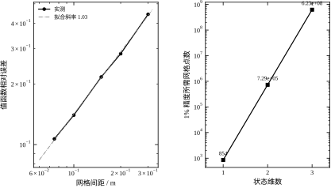
图 64-8 网格 DP 的误差阶（左）与 1% 精度所需的网格点数（右）
更要紧的是误差的方向：所有 V_0 都大于 1.7503，没有一个是低估的。原因有两个，且都朝同一方向：控制量只有 9 档，达不到真正的最优 u，代价只能偏高；双线性插值对凸的值函数上偏，等效于“高估了未来的代价”。两者叠加，使 DP 成为一个保守估计。
这条性质很有用：如果 DP 算出的最优代价已经比现有控制器低，那结论一定成立（真实最优只会更低）；反之如果 DP 比现有控制器高，不能立刻下结论，得先加密网格看趋势。
图 64-8 右图把外推结果画了出来。按 \text{err}\approx1.505h 反解，要到 1% 精度需要 h=0.0070 m，即每轴 n=854 点：
| 状态维数 | 网格点数 | 每次递推的插值次数（80 步） | 预估耗时 |
|---|---|---|---|
| 1 | 854 | 6.8\times10^4 | 0.02 s |
| 2 | 7.29\times10^5 | 5.8\times10^7 | 19.55 s |
| 3 | 6.23\times10^8 | 5.0\times10^{10} | 4.64 h |
（每状态每步实测 0.34 µs，据此换算。）
二维 19.55 s 还能接受——离线算一次，之后查表。三维 4.64 小时就不能接受了，而这还只是“每轴 1% 精度”；如果对象有五个状态（比如加了执行器动态和两个积分器），点数会到 854^5\approx4.5\times10^{14}，宇宙年龄也算不完。
所以网格 DP 的适用范围非常明确：状态维数 ≤3，且离线可用。这句话不是保守，是算出来的。任何声称“用 DP 解决高维最优控制”的方案，实际上都用了某种降维、函数逼近或采样，已经不是原始网格 DP 了（§64.9 会讲这些改法）。
DP 还有一个副产品：值函数的梯度。在网格上做中心差分
\lambda(x)\approx\Bigl[\frac{\partial V}{\partial x_1},\;\frac{\partial V}{\partial x_2}\Bigr]^{\mathsf T} \tag{64-32}
得到的就是协态变量。在 x_0=(1,0) 处，n=81 的 DP 给出 \lambda=[3.5623,\;2.0471]，而 Riccati 的理论值是 2Px_0=[3.5007,\;1.9884]，最大相对误差 2.95%。图 64-9 把两者沿位置轴画在一起，DP 的散点基本贴着解析直线。
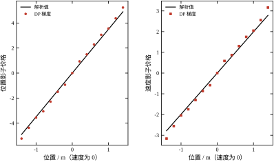
图 64-9 DP 差分得到的协态与解析值 2Px 的对照
误差 2.95% 比值的误差 10.7% 小得多，这是因为差分是“局部”运算，网格的常值偏差在相减时抵消了。用 DP 求梯度比用 DP 求值更准，这条经验在数值方法里普遍成立。
协态的经济含义是影子价格：\lambda_1=3.56 意味着“位置差 1 m，总代价多 3.56”；换成 1 cm，就是 0.0356，约占总代价的 2%。\lambda_2=2.05 意味着“速度差 1 m/s，代价多 2.05”。
这个数可以直接用来分配传感器预算。假设位置测量标准差 1 cm、速度测量标准差 0.05 m/s，两者对代价的贡献分别是 3.56\times0.01=0.0356 与 2.05\times0.05=0.102——速度的贡献是位置的近 3 倍。如果只能升级一个传感器，该升级测速的。这个结论不是拍脑袋，是从 \lambda 算出来的，而且换个工作点比例会变（§64.8.4 会给出完整的比较）。
离散 Riccati 是迭代求解的，什么时候停？工程上常用“相对变化小于 10^{-3}”，但步数本身没有意义，因为步数取决于 T_s。表 64-7 把五个采样周期放在一起。
| 采样周期 T_s / s | 收敛步数 | 折算物理时域 / s | 与 1/(\zeta\omega_n) 之比 |
|---|---|---|---|
| 0.20 | 25 | 5.00 | 4.33 |
| 0.10 | 49 | 4.90 | 4.24 |
| 0.05 | 97 | 4.85 | 4.20 |
| 0.02 | 240 | 4.80 | 4.16 |
| 0.01 | 480 | 4.80 | 4.16 |
表 64-7 离散 Riccati 收敛步数随采样周期的变化（相对判据 10^{-3}）
步数随 T_s 反比变化，物理时域稳定在 4.8–5.0 s，约等于最慢极点时间常数 1/(\zeta\omega_n)=1.155 s 的 4.2 倍。这条规律可以直接用：收敛判据不要写“迭代 500 次”，要写“反推 \ge5/(\zeta\omega_n) 秒”。这样换采样率时判据自动缩放，不会出现“采样变快 10 倍、迭代次数不够”的隐蔽错误。
顺带说一句，T_s=0.01 s 时的 480 步已经接近 500 步的经验上限——如果哪天采样率再提高一个量级，按次数判据的代码就会静默地返回未收敛的结果，而且增益看起来“差不多”，很难发现。
“采样要多快”这个问题，答案取决于控制器是按离散模型重新设计的，还是沿用连续域算出的增益。这两种做法在工程上都常见，但能容忍的采样周期差了一个数量级以上。下面把两条路各扫一遍。
先看重新设计。固定 q_1=q_2=1、r=1，每个采样周期都用该周期下的 (A_d,B_d) 与等价权重重新解一次离散 Riccati：
| T_s / s | 0.005 | 0.01 | 0.02 | 0.05 | 0.10 | 0.20 | 0.30 | 1.00 | 1.50 |
|---|---|---|---|---|---|---|---|---|---|
| K_1 | 0.996 | 0.991 | 0.983 | 0.958 | 0.917 | 0.841 | 0.772 | 0.434 | 0.301 |
| K_2 | 1.727 | 1.722 | 1.712 | 1.683 | 1.636 | 1.546 | 1.463 | 1.028 | 0.832 |
| 谱半径 | 0.9969 | 0.9938 | 0.9826 | 0.9424 | 0.8943 | 0.8257 | 0.7719 | 0.4345 | 0.3008 |
这张表里有两个现象。第一，增益随 T_s 单调下降，T_s=0.3 s 时 K_1 只剩 0.772，比连续解低 23%；这是离散代价里 \int x^{\mathsf T}Qx\,dt\approx T_s\sum x_k^{\mathsf T}Qx_k 的换算在起作用，采样越粗，“一秒里罚的次数”越少，等效权重越小。第二，谱半径一路降到底，始终小于 1，即无论采样多慢，重新设计出来的控制器都是稳定的——因为它是针对采样后模型的最优解，稳定性由构造保证。
再看沿用连续增益这条路。K=[1.000,1.732] 不动，只改执行时的采样周期：
| T_s / s | 0.02 | 0.10 | 0.30 | 0.50 | 1.00 | 1.50 | 2.00 |
|---|---|---|---|---|---|---|---|
| 谱半径 | 0.9826 | 0.9120 | 0.7248 | 0.5089 | 0.6115 | 1.9640 | 3.5933 |
| 20 s 后位置 | 0.000 | 0.000 | 0.000 | 0.000 | 0.000 | -1073 | 1.1\times10^5 |
分界点落在 1.0 s 与 1.5 s 之间：T_s=1.0 s 时谱半径 0.61 还稳，T_s=1.5 s 时已经 1.96，20 s 后位置跑到 -1073 m，彻底发散。谱半径在 0.5 s 处最小（0.509），之后回升，说明采样再慢就开始“帮倒忙”。
这个分界点可以和 §64.6.6 的延迟裕度对上：零阶保持器等效于约 T_s/2 的纯延迟，本章闭环的延迟裕度是 0.695 s，反推临界采样周期约 1.39 s，正好落在实测的 1.0–1.5 s 区间内。两条完全独立的分析方法给出同一个量级，这种交叉验证比任何一条单独的证据都可靠。
工程上该怎么用这张表？如果控制器跑在固定采样率的数字平台上、且允许在线重算增益（或者按几个采样率离线算好几组系数），那么 T_s 的约束来自别的因素——测量噪声、执行器更新率、指令平滑度，而不是稳定性。如果为了省事只在连续域设计一次、把增益烧进固件，那么 T_s 必须远小于 2\times0.695=1.39 s，取十分之一即 0.14 s 以内才算安全，本章的 0.02 s 有 70 倍余量。“连续设计 + 离散执行”是工程项目里最常见的隐性风险源，因为设计文档上写的是 s 域，代码里跑的是 z 域，两边的假设没人去核对。
§64.5.1 给出了离散 PMP 的三个条件，但没有说怎么解。既然它是一个两点边值问题，最朴素的办法就是把整段控制序列 U=(u_0,\dots,u_{N-1}) 当成未知向量，直接对代价做梯度下降。梯度可以通过反向扫一遍协态得到，每次迭代的计算量与一次正向仿真同阶。
拿本章算例试一下：T_s=0.02 s、240 步（4.8 s 时域）、q_1=q_2=r=1、x_0=(1,0)，初值取 U\equiv0。参考最优值是 Riccati 给出的 J^*=1.7421（不动的代价是 4.8，正好等于时域长度——位置一直停在 1 m，每秒罚 1）。
| 迭代次数 | 1 | 100 | 500 | 1000 | 2000 | 4000 |
|---|---|---|---|---|---|---|
| 代价 J | 4.800 | 2.644 | 2.106 | 1.940 | 1.808 | 1.753 |
| 相对最优的偏差 | 176% | 51.8% | 20.9% | 11.4% | 3.75% | 0.64% |
四千次迭代才把误差压到 1% 以内，而 Riccati 只用了 758 次矩阵递推就收敛到机器精度。两者的差距不是“实现得好不好”，是收敛速度的量级不同：
由此得到一条工程判断：能用 Riccati 就别用梯度法。梯度法（及其 cousins：共轭梯度、L-BFGS）的价值只在 Riccati 用不了的场合——有控制约束、有状态约束、或者指标不是二次型。这时它的慢是必须付的代价，而且要靠“好的初值”（先解无约束 LQR，把它当作初值）把迭代次数压下来。本章的 U\equiv0 是最差的初值，实际工程里没人这么干。
还有一点值得注意：梯度法的收敛不等于控制的收敛。J 到 0.64% 时，U 与最优序列的逐点偏差可能还有百分之几，只是这些偏差集中在代价平坦的方向上。所以验收时不能只看代价，必须同时看轨迹或控制序列本身。
网格 DP 有两个参数容易被混为一谈：每轴点数 n 决定分辨率（h），网格范围决定能覆盖多远的工况。固定 n=81、T_s=0.05 s、80 步，只改范围，x_0=(1,0) 处的值函数是：
| 网格范围 | 间距 h / m | V_0 | 相对 1.7503 的误差 |
|---|---|---|---|
| [-1.0,1.0] | 0.025 | 1.8247 | 4.25% |
| [-1.2,1.2] | 0.030 | 1.8351 | 4.85% |
| [-1.5,1.5] | 0.0375 | 1.8492 | 5.65% |
| [-2.0,2.0] | 0.050 | 1.8756 | 7.16% |
| [-3.0,3.0] | 0.075 | 1.9371 | 10.67% |
| [-4.0,4.0] | 0.100 | 1.9953 | 14.00% |
误差随范围扩大而变大，但这不是“范围大不好”的结论，而是在 n 固定时，范围越大 h 越大，一阶误差 \propto h 随之上升。真正的规则是两条独立的要求：
dp_grad 会抛越界异常），因为边界点没有左右邻点。工程上的取值经验是：范围取最大工况的 1.2–1.5 倍，n 按目标精度反解。两者的开销不同——范围只增加“被算但用不到”的网格，n 却是按维数指数增长的，所以宁可范围放宽一点（线性代价），也不要为了省网格把边界卡死在工况上。
还有一条实现细节值得记：边界上的差分会失效，但边界上的插值不会。所以求值（dp_value）可以在整个网格内调用，求梯度（dp_grad）只能在内点调用。这不是代码 bug，而是中心差分的固有要求；如果必须在边界求梯度，应该改用单侧差分，并接受一半的精度。
网格 DP 实际有四个可调量（h、\Delta u、步数、范围），上一小节处理了范围，这一小节把其余三个各扫一遍，看谁真正决定精度。参考值仍取 \pm3 以外的细网格结果 1.7503。
固定 \Delta u=0.25（9 档）、80 步，只改每轴点数：
| n | h / m | V_0 | 相对误差 |
|---|---|---|---|
| 21 | 0.3000 | 2.5266 | +44.4% |
| 41 | 0.1500 | 2.1293 | +21.7% |
| 81 | 0.0750 | 1.9371 | +10.7% |
| 161 | 0.0375 | 1.8492 | +5.65% |
h 每减半，误差大致减半——典型的一阶收敛。这里有一个漂亮的巧合值得记下来：n=161、范围 \pm3 的 h=0.0375，与 §64.5.9 表里 n=81、范围 \pm1.5 的 h=0.0375 完全相同，两者给出同一个 V_0=1.8492。也就是说，决定精度的是间距 h 本身，而不是点数 n；扩大范围就必须同步加点数来维持 h，否则精度按比例掉。
固定 n=81、80 步，只改控制档位数：
| n_u | \Delta u | V_0 | 相对误差 |
|---|---|---|---|
| 3 | 1.000 | 2.0755 | +18.6% |
| 5 | 0.500 | 1.9864 | +13.5% |
| 9 | 0.250 | 1.9371 | +10.7% |
| 17 | 0.125 | 1.9239 | +9.9% |
| 33 | 0.0625 | 1.9208 | +9.7% |
档位从 3 加到 9，误差降 7.9 个百分点；从 9 加到 33，只降 1 个百分点。控制量化在 9 档附近就饱和了，因为此时限制精度的已经不是“指令太粗”，而是状态网格 h。这也解释了为什么本章的 dp_solve 默认取 n_u=9：再多档只是让每步的循环变长，值函数不再明显改善。
固定 n=81、n_u=9，只改步数：
| 步数 | 时域 / s | V_0 | 相对误差 |
|---|---|---|---|
| 40 | 2 | 1.6287 | −6.9% |
| 80 | 4 | 1.9371 | +10.7% |
| 160 | 8 | 2.0020 | +14.4% |
| 320 | 16 | 2.0176 | +15.3% |
这张表不能只看误差列，因为两个误差源在这里同向叠加：时域短于调节时间的若干倍时，V_0 偏小（2 s 时还差 6.9%，因为“没走完的路”没被计费）；时域拉长后，网格离散带来的正偏差又浮现出来（+10% 量级）。所以 4 s 之后 V_0 继续缓慢上升，既有时域的真贡献，也有网格的假贡献，两者在本例中无法从单点数值分离。可用的判断只有一条：步数必须覆盖 4/(\zeta\omega_n) 以上，本例中即 4.6 s，取 80 步（4 s）已经踩线，取 160 步更稳妥。
三个旋钮的结论可以压成一句：h 决定地板，\Delta u 决定能否下到地板，步数决定这层楼有没有盖够高。把 n_u 从 9 加到 33 而不同时减小 h，纯属白费机时。
最优控制的“最优”是相对指标而言的，稳定性却是绝对要求。工程上常见的问题是：指标算得很漂亮，闭环却在限幅或模型偏差下一塌糊涂。本节从极点、频域裕度、饱和、模型偏差、延迟、噪声六个方面检查本章算例的闭环，看它在“算得最优”之外还剩多少余量。
连续 LQR 的闭环极点是 -0.866025\pm j0.500000，对应 \omega_n=1、\zeta=0.866。这两个数不是调出来的，是 Q、R 决定的。对双积分器，特征多项式是
s^2+K_2s+K_1=s^2+1.732s+1
与标准二阶 s^2+2\zeta\omega_ns+\omega_n^2 对比，\omega_n=\sqrt{K_1}=1，\zeta=K_2/(2\sqrt{K_1})=1.732/2=0.866。
\zeta=0.866 恰好是 Butterworth 之外的另一个常用值（\zeta=1/\sqrt{1.5}\approx0.816 是 ITAE 最优，0.707 是 Butterworth）。LQR 给出 0.866，原因是它同时罚位置和速度：位置误差要压，速度也要压，但速度的权重只有位置的一半（q_2=q_1，而 K_2 的贡献被 \sqrt{\cdot} 压缩），折中结果就是“略过阻尼”。这个阻尼比有一个直接的工程好处：阶跃响应无超调（§64.6.3），对定位机构来说意味着不会撞限位。
离散化后极点是 0.982780\pm j0.009828。用 z=e^{sT_s} 换回连续域：|z|=0.98283，\angle z=0.010 rad，对应 s=\ln(z)/T_s\approx-0.866\pm j0.500，与连续解一致到第三位。这说明 T_s=0.02 s 的离散化几乎无损。
开环传递函数是 L(s)=\dfrac{K_2s+K_1}{s^2}，穿越频率 1.8179 rad/s，相位裕度 72.38°。
72.38° 这个数比 LQR 的理论下界 60° 高，原因可以算出来：L(j\omega) 的相位是 -180°+\arctan(\omega K_2/K_1)，在 \omega=\omega_c 处 \arctan(\omega_cK_2/K_1)=72.38°，所以 \omega_cK_2/K_1=\tan72.38°=3.13。代入 K_2/K_1=1.732 得 \omega_c=1.81，与实测 1.8179 吻合。
增益裕度是无穷大。双积分器的开环幅值以 -40 dB/dec 下降，相位从 -180° 单调升向 -90°，永远不再穿过 -180°，所以增益怎么加都不会失稳（在实际系统里，这个结论会被执行器动态和高频模态打破）。这不是 LQR 的功劳，是双积分器本身的结构；换成三阶对象，增益裕度就会变成有限值。
LQR 的 60° 相位裕度下界值得单独记一笔：对单输入系统，LQR 闭环的回路传函满足 |1+L(j\omega)|\ge1，由此可推出相位裕度不小于 60°、增益裕度不小于 6 dB（或无穷）。这条性质是 LQR 在工业上被接受的重要原因——它不保证“性能好”，但保证“不会太脆”。
本章 1 m 阶跃的实测结果是：调节时间 4.34 s（2% 带）、推力峰值 0.9828、超调 0。
零超调来自 \zeta=0.866>0.707，也来自闭环没有右半平面零点（L(s) 的零点在 -K_1/K_2=-0.574，左半平面）。如果对象本身有右半平面零点（比如带延迟的近似），LQR 会产生反向响应，超调就压不住了，那时必须靠 Q 的整形或加前馈。
对工程而言，零超调的直接价值是可以把定位精度做到与稳态误差同量级。有 20% 超调的系统，1 m 阶跃会冲到 1.2 m，机械限位就必须留 20% 余量；无超调则可以把余量压到 2%。这条差别在精密定位台上就是几十毫米的行程差异。
把限幅 |u|\le1 加进去，四档初值的结果列在表 64-8。
| 初值 x_1 / m | 无约束推力峰值 | 饱和后峰值 | 调节时间（无约束）/ s | 调节时间（饱和）/ s | 最短时间 / s |
|---|---|---|---|---|---|
| 1 | 0.983 | 0.983 | 4.34 | 4.34 | 2.000 |
| 2 | 1.966 | 1.000 | 4.66 | 4.80 | 2.828 |
| 4 | 3.931 | 1.000 | 4.88 | 5.54 | 4.000 |
| 8 | 7.863 | 1.000 | 7.62 | 8.88 | 5.657 |
表 64-8 大阶跃下无约束解越界与饱和后的性能（T_s=0.02 s）
读表有三层。
第一层，约束一旦生效，性能立刻掉档。x_1=2 时无约束只要 4.66 s，饱和后 4.80 s，差 3%；x_1=4 时 4.88 对 5.54，差 13.5%；x_1=8 时 7.62 对 8.88，差 16.5%。越界越多，掉得越狠。
第二层，饱和后的时间仍然远大于最短时间。x_1=8 时饱和解 8.88 s，真正的最短时间只要 5.657 s，慢 57%。这说明“限幅 + LQR”不是“接近最优的带约束解”，而是一个结构上就错的解：它在约束边界上仍然按线性律分配推力，不会像 bang-bang 那样把推力用满再用满反向。
第三层，无约束的调节时间本身也不单调。x_1 从 1 到 8，时间是 4.34、4.66、4.88、7.62——前三个几乎不变，最后一个跳了一截。原因是 2% 带的绝对宽度随初值放大，小初值时“进带”很快，大初值时收敛尾段变长。这提醒我们：调节时间不是尺度无关的指标，比较不同幅值的响应时必须说明带宽定义。
工程上的处理办法有两条。一是在指标里加饱和惩罚（比如 R 随 |u| 增大而增大），让解自己避开限幅，代价是性能退化（§64.7 会看到 R 放大 100 倍，时间从 4.34 s 涨到 18.66 s）；二是改用带约束的解法（PMP/MPC），让约束进入最优性条件。前者简单但保守，后者复杂但正确。
把对象增益改成 0.8 和 1.2（±20%），分别用开环最优控制和闭环状态反馈跑同一条 4 s 的能量最优轨迹，结果画在图 64-10。
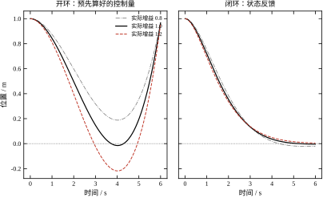
图 64-10 对象增益 ±20% 时开环最优控制与闭环反馈的位置响应
开环的结局很难看：增益 0.8 时末端停在 0.1880 m（差 19%），增益 1.2 时停在 -0.2180 m（差 22%），而且轨迹在中途就已经偏出很远，最大偏差比末端还大。开环最优控制在模型偏差面前，连“大致到位”都做不到。
闭环的结局好得多：三档增益下末端残差都不超过 0.0055 m（0.55%），调节时间 6.04、4.34、4.78 s。增益偏小（0.8）时响应变慢，因为实际推力比预期小；增益偏大（1.2）时残差仍小，但调节时间反而比 1.0 时长了 0.44 s，说明过冲后的收敛尾段被拉长了。
这张图给出一个可以推广的结论：最优控制的设计成果是“增益”，不是“轨迹”。轨迹只在模型精确时有效，增益在所有模型下都有效（只要闭环稳定）。所以“把最优轨迹算出来、照着执行”是错误用法，“把最优增益算出来、闭环执行”才是正确用法。这也解释了为什么 §64.4 的能量最优解（一条开环直线）在工程上很少直接用——它必须配一个跟踪外环才有意义。
§64.6.2 给出的相位裕度 72.38° 不只是“看起来不错”的一个数，它能换算成一条对工程更有用的指标——延迟裕度。纯延迟在频域上是 e^{-j\omega T_d}，它不改变幅值、只把相位往下拽 \omega T_d。相位裕度被吃光时闭环失稳，所以临界延迟是
T_{d,\max}=\frac{\text{PM}}{\omega_c}=\frac{1.2635\ \text{rad}}{1.8173\ \text{rad/s}}=0.695\ \text{s} \tag{64-33}
0.695 s 是什么概念？本章的时间尺度是 T_c=1 s，也就是说延迟达到时间常数的七成才失稳。这解释了 §64.6.1 里“T_s=0.02 s 的离散化几乎无损”——0.02 s 的保持延迟只有裕度的 3%。
为了验证这个换算，直接在闭环里插一个纯延迟环节（用长度为 T_d/T_s 的队列实现），测 20 s 后的位置：
| T_d / s | 0 | 0.2 | 0.4 | 0.6 | 0.68 | 0.72 | 0.80 | 1.0 | 1.5 |
|---|---|---|---|---|---|---|---|---|---|
| 20 s 后位置 / m | 0.000 | 0.000 | 0.000 | 0.008 | -0.251 | -0.555 | 7.14 | -51.7 | 1.3\times10^3 |
延迟 0.4 s 时还干干净净地收敛到零；0.6 s 时残差 8 mm，已经能看出“收不下去”；0.72 s 起开始单调爬升；0.80 s 时冲过 7 m 才进入等幅振荡；1.0 s 以上直接发散。从“完全稳定”到“彻底发散”的过渡带只有 0.2 s 宽，中心正好在解析预测的 0.695 s 附近。
这张表还揭示了一件在纸面上看不到的事：失稳不是突然发生的。延迟从 0.4 s 增到 0.6 s，闭环的极点只是靠近虚轴，表现是“收敛变慢、残差变大”，而不是报警。现场调试时，这类问题常被误判成“机械卡涩”或“传感器漂移”，因为响应看起来仍然“在动”。判据应该定在延迟裕度的三分之一以内（本例 0.23 s），留出足够的余量给未建模的执行器动态。
反馈把偏差拉回来的同时，也把测量噪声搬进了执行器。本章的增益对噪声的放大倍数是确定的：
u=k_1\tilde x_1+k_2\tilde x_2\ \Longrightarrow\ \sigma_u=\sqrt{K_1^2\sigma_1^2+K_2^2\sigma_2^2} \tag{64-34}
代入 K=[1.000,\,1.732]，只看位置噪声，四档传感器精度给出的控制量标准差是：
| 位置噪声 \sigma_1 | 0.5 mm | 1 mm | 2 mm | 5 mm |
|---|---|---|---|---|
| 推力抖动 \sigma_u / (m/s²) | 0.0010 | 0.0020 | 0.0040 | 0.0100 |
| 占限幅 u_{\max}=1 的比例 | 0.10% | 0.20% | 0.40% | 1.00% |
读数很直接：\sigma_u=K_1\sigma_1 是线性关系，没有阈值效应，1 mm 的噪声换来 0.2% 的推力抖动。这个量级对定位台完全可以接受，所以 §64.6.4 担心的饱和问题在这里不会因噪声而恶化。
但如果把增益压到 §64.7.7 那种量级（K_1=316），同样的 1 mm 噪声就会变成 0.316 m/s²，占 u_{\max}=20 的 1.6%；\sigma_1=5 mm 时到 7.9%，噪声开始明显烧执行器。“高增益”和“低噪声”是一对不可兼得的要求，这也是 §64.9 里“观测器/滤波器”那条改进路线的现实动机。
还有一个容易被忽略的噪声源：量化。12 位 ADC 量程 ±5 m，最低位是 10/4096=2.44 mm，其量化误差的标准差是 \text{LSB}/\sqrt{12}=0.705 mm，等效推力抖动 0.0015 m/s²。这个数比大多数模拟传感器的噪声还小，所以本章算例不必专门建模；但如果增益是 316 那一档，量化噪声就已经贡献了 0.22 m/s²，不能再忽略。
顺带一个速度通道的提醒：\sigma_2 前面乘的是 K_2，而 K_2 含 q_2/r 项，速度噪声的放大倍数通常比位置大（K_2/K_1=1.732）。差分测速的噪声往往还是位置噪声的 1/T_s 倍，两者一乘就非常可观。这就是为什么工程上要么用测速机/编码器直接测速，要么在控制器前加一个低通，而不是简单地对位置做差分。
把本节六条放在一起，可以看出 LQR 的“最优”背后有五项不写在指标里的成本：
五项成本都不在 J 里，却都决定实际性能。所以验收一个最优控制器，不能只看 J 和阶跃响应，必须把这五项单独测一遍——这也是 §64.3.6 把它们列为“校核”而非“可选项”的原因。
本章前面所有仿真都是“调到原点”，u=-Kx 里没有参考量。真实任务要跟踪 r(t)，最自然的改法是把位置误差代进去：
u=-K_1(x_1-r)-K_2x_2
这个改法对阶跃参考是够用的（终值 x_1=r、x_2=0 时 u=0），但对斜坡参考会留下一个可算出来的滞后。设 r=vt，稳态时 x_2=v、\dot x_2=0 要求 u=0，代入控制律得
x_1-r=\frac{K_2}{K_1}v
也就是说位置会稳定地落后 K_2v/K_1。本章 K_2/K_1=1.732，所以速度每 1 m/s 就带来 1.732 m 的滞后。实测三档速度：0.2、0.5、1.0 m/s 对应滞后 0.344、0.861、1.722 m，与 0.346、0.866、1.732 的解析值差不到 1%，误差来自 2% 判定带的取点方式。
两种改法的对比如下：
| 参考速度 v / (m/s) | 0.2 | 0.5 | 1.0 |
|---|---|---|---|
| 只把位置误差代入（滞后 / m） | 0.344 | 0.861 | 1.722 |
| 位置、速度都按误差代入（滞后 / m） | 0.0037 | 0.0093 | 0.0185 |
第二行用的是 u=-K_1(x_1-r)-K_2(x_2-\dot r)，把参考的速度也送进速度通道。滞后降到原来的 1%，剩下的残差来自“参考速度发生阶跃跃变”时的那一小段过渡——只要参考本身是光滑的（梯形速度规划），这部分残差可以做到零。
原因很清楚：LQR 的增益是相对“全状态”设计的，参考量也必须以“全状态”的形式进入。只补位置通道，相当于让控制器在速度通道上一直看到“参考速度为 0”，它就会把跟踪斜坡当成“在外力推动下偏离原点”来处理，自然要留出一个与速度成正比的偏差去平衡。
这条规律在实际调试中很容易被误判。现场看到“轨迹跟踪有固定滞后”，第一反应往往是“增益不够、加大 K_1”，但加大 K_1 只能把 K_2/K_1 压小、让滞后按比例减小，代价是阻尼下降、超调出现（§64.7.5）。正确做法是把参考速度补进去——这不花任何代价，因为 \dot r 是规划器本来就知道的量。能用已知信息补的，不要用增益去硬压，这是最优控制工程化时最常被忽略的一条。
顺带说一句，这也是“前馈”在最优控制框架里的位置：它不改变闭环极点、不改变稳定性，只是把“已知的未来输入”提前消掉。MPC（第 58 章）把这件事做得更彻底——它连未来的参考轨迹一起优化，所以对斜坡、正弦这类参考天然没有滞后。
极点回答了“衰减多快”，频响回答“跟得上多快的参考”。闭环传函是 T(s)=L(s)/(1+L(s))，代本章的 L(s)=(K_2s+K_1)/s^2 得到一组可以直接用的数：
| 频率 \omega / (rad/s) | 0.1 | 0.5 | 1.0 | 1.817 | 2.0 | 3.0 | 5.0 |
|---|---|---|---|---|---|---|---|
| 幅值比 | 1.010 | 1.155 | 1.155 | 0.847 | 0.787 | 0.555 | 0.342 |
| 相位 / (°) | -0.1 | -8.2 | -30.0 | -53.8 | -57.0 | -67.9 | -76.7 |
三个特征数：谐振峰 1.196（+1.55 dB）出现在 0.741 rad/s，-3 dB 带宽 2.275 rad/s，穿越频率 1.817 rad/s。 谐振峰的存在与“无超调”并不矛盾——\zeta=0.866 的二阶系统在频域上仍有 1/(2\zeta\sqrt{1-\zeta^2})=1.196 的峰，只是它对应的是“对正弦输入的稳态放大”，而不是“对阶跃的过冲”。这两个指标经常被混为一谈，实际上一个看 |T(j\omega)| 的最大值，一个看阶跃响应的最大值。
带宽 2.275 rad/s 的工程含义，最好用“跟踪误差”这个直接指标来说。对单位幅值的正弦参考，误差幅值是 |1-T(j\omega)|，实测：0.2 rad/s 处 3.9%，0.5 rad/s 处 21.8%，0.7 rad/s 处 37.3%，1.0 rad/s 处 57.7%。若要求跟踪误差不超过 10%，参考频率必须低于 0.052 Hz（0.325 rad/s）；放宽到 30% 也只能到 0.097 Hz（0.607 rad/s）。带宽 2.275 rad/s 是个“衰减噪声”的指标，不是“精确跟踪”的指标，两者差了二十倍——这条差距在实际选型时经常被忽略，很多人看到“带宽 2.3 rad/s”就以为能跟 0.3 Hz 的正弦，实际误差已经过半。
这与 §64.6.9 的斜坡滞后是同一件事的两种说法：斜坡的频谱集中在低频，而低频段相位滞后近似线性增长，于是表现为恒定的位置偏差；正弦参考则是“幅值略放大 + 相位滞后”，折算成时域误差后随频率迅速上升。
带宽与时间常数的关系可以记住一个粗算：\omega_b\approx2.3/T_c。本章 T_c=1 s，带宽 2.275 rad/s，系数 2.28。想让带宽翻倍，T_c 要减半，也就是 q_1/r 涨 16 倍（四次方关系）——这又一次印证了 §64.7.1 的“R 不敏感”。
最后提醒一句：带宽不是越高越好。本章 2.275 rad/s 对应的噪声放大倍数已在 §64.6.7 算过（K_1\sigma_1），带宽每翻一倍，同样的噪声会让控制量抖动翻倍；而 §64.6.6 的延迟裕度会按 1/\omega_b 下降。设计时通常把带宽定在“参考信号最高频率的 3–5 倍、同时延迟裕度不小于延迟的 3 倍”，这两个条件往往从两侧夹住同一个数。
最优控制里的 Q、R 经常被当成“权重旋钮”，调大调小凭手感。但它们各有明确的物理角色，而且作用方式可以写成闭式。本节用双积分器的解析解把三个参数的作用拆开，给出“想要多快，就该取多少”的换算公式。
回到式 (64-18)：K_1=\sqrt{q_1/r}、K_2=\sqrt{2\sqrt{q_1/r}+q_2/r}。看这两个式子就能读出分工：
由 \omega_n=(q_1/r)^{1/4} 可以反解出一个时间尺度
T_c=\frac{1}{\omega_n}=\Bigl(\frac{r}{q_1}\Bigr)^{1/4} \tag{64-35}
这是本章最实用的一条公式。想要闭环时间尺度 T_c，就把 r/q_1 设成 T_c^4。T_c=1 s 时 r/q_1=1，正是本章的默认权重；T_c=3.16 s 时 r/q_1=100，对应 K=[0.100,0.458]。权重的四次方关系解释了为什么 R 调起来“不敏感”：想把速度提高一倍，R 要缩小 16 倍，而不是 2 倍。
保持 q_1=q_2=1，把 r 从 0.01 扫到 100，结果列在表 64-9。表中同时给出离散数值解与连续闭式解，两者差 0.4%–10%，差值随增益增大而增大（离散化的代价）。
| r | K_1（离散） | K_1（闭式） | K_2（离散） | 推力峰值 | 调节时间 / s | 最优代价 J |
|---|---|---|---|---|---|---|
| 0.01 | 8.9639 | 10.0000 | 9.9136 | 8.9639 | 3.98 | 1.0954 |
| 0.03 | 5.3996 | 5.7735 | 6.3210 | 5.3996 | 4.04 | 1.1603 |
| 0.10 | 3.0371 | 3.1623 | 3.9113 | 3.0371 | 4.10 | 1.2777 |
| 0.30 | 1.7781 | 1.8257 | 2.5919 | 1.7781 | 4.12 | 1.4476 |
| 1.00 | 0.9828 | 1.0000 | 1.7122 | 0.9828 | 4.34 | 1.7321 |
| 3.00 | 0.5704 | 0.5774 | 1.2108 | 0.5704 | 4.96 | 2.1128 |
| 10.0 | 0.3135 | 0.3162 | 0.8517 | 0.3135 | 10.00 | 2.7064 |
| 30.0 | 0.1814 | 0.1826 | 0.6291 | 0.1814 | 13.64 | 3.4575 |
| 100 | 0.0995 | 0.1000 | 0.4572 | 0.0995 | 18.66 | 4.5826 |
表 64-9 控制权重 r 的九档扫描（q_1=q_2=1，初值 (1,0)）
表 64-9 里最刺眼的一行是 r=0.01：控制便宜了 100 倍，推力峰值从 0.983 涨到 8.964（9 倍），调节时间却只从 4.34 s 降到 3.98 s——省了 8%。
这不是数值问题，是结构问题。闭环特征多项式是 s^2+K_2s+K_1，两个极点的乘积是 K_1、和是 K_2。当 r 很小时 K_2\gg2\sqrt{K_1}，极点变成一快一慢：
s_{1,2}\approx-\frac{K_1}{K_2}\ \text{（慢）},\qquad -K_2\ \text{（快）}
慢极点是 \dfrac{K_1}{K_2}=\dfrac{1}{\sqrt{2\sqrt r+1}}（代入 q_1=q_2=1）。r\to0 时它趋于 -1，再也不动了。r=0.01 时它等于 -0.913，时间常数 1.1 s，4/\sigma\approx4.4 s，与实测 3.98 s 吻合。
也就是说：拼命减小 R 不会让系统更快，只会让它更过阻尼。 阻尼比从 r=1 的 0.866 涨到 r=0.01 的 1.732，快极点跑到 -9.95，但慢极点被 K_1/K_2 卡在 -1 附近。工程含义很直接：想快，要改 q_1（或 q_1/q_2 之比），不要一味压 R。
这也解释了 §64.6.4 里“限幅 + LQR”为什么慢：把 R 调小只会让推力峰值涨、时间几乎不变，越界更严重，却换不来速度。
q_1=q_2=1 时，最优代价有闭式 J=\sqrt{2\sqrt r+1}（也等于 K_2\sqrt r）。它在两个区段表现完全不同：
表 64-9 后两列正是这个规律：r 从 100 降到 1，J 从 4.58 降到 1.73（降 62%）；再从 1 降到 0.01，只降到 1.10（再降 36%，而 r 降了 100 倍）。
边际收益递减得非常快。 这条规律给了一个实用的停止准则：当 r 再缩小 10 倍、J 只降不到 5% 时，就没有继续压 R 的必要了——剩下的收益要靠改结构（加积分、加前馈、改执行器），而不是调权重。
同样是“加权重”，q_1 和 q_2 的效果完全不同，这一点从闭式解就能看出来：
所以“加快响应”该动 q_1，“压超调”该动 q_2。两个都动，就会互相抵消。这条分工在式 (64-18) 里是显然的，但在实际调参时经常被忘掉——很多人一看到响应慢就同时加大 q_1 和 q_2，结果增益涨了、时间没变。
q_1 与 q_2 的比值还有一个物理读法：它是“位置误差与速度误差的等价汇率”。q_2/q_1=1 意味着 1 m 的位置误差与 1 m/s 的速度误差等价；如果某台设备的速度传感器噪声大，就该把 q_2 调小，让控制器少信速度。
把上面的分析汇总成表 64-10。表里的箭头都是从闭式解严格推出来的，不是经验估计。
| 参数变化 | K_1 | K_2 | \zeta | 调节时间 | 代价 J | 主要风险 |
|---|---|---|---|---|---|---|
| q_1\uparrow | \uparrow | \uparrow（次线性） | \downarrow | \downarrow | \uparrow | 超调、噪声放大 |
| q_2\uparrow | 不变 | \uparrow | \uparrow | \uparrow（略） | \uparrow | 响应变钝 |
| r\uparrow | \downarrow | \downarrow | 视区间 | \uparrow | \uparrow | 太保守、抗扰差 |
| r\downarrow | \uparrow | \uparrow | \uparrow（r 小） | 几乎不变 | \downarrow（递减） | 推力饱和、噪声放大 |
表 64-10 三个权重对闭环指标的影响方向
这张表最有用的地方是最后两行：r 的减小在“时间”这一列几乎无效，只在“代价”这一列有效。如果设计目标是时间，这张表直接告诉你别动 r。
还有一个量纲上的提醒。式 (64-35) 的 T_c=(r/q_1)^{1/4} 只在 q_1 与 x_1 同量纲、r 与 u 同量纲时成立。换单位（m→mm）会让 q_1 的数值变 10^6 倍，T_c 变 10^{-1.5} 倍，增益全乱。所以权重必须与单位一起记录，这是 §64.3.1 强调量纲的实际原因。
表 64-9 和表 64-10 都是在线性、无约束的前提下得到的。可 §64.7.1 已经点明，R 管的是“控制量贵不贵”，而执行器贵不贵，最终是由物理限幅说话的。为了看清这件事，把权重调到线性分析失效的区间再实测一遍：固定 q_2=1、q_1=10^6，扫描 r=10,\,25,\,50,\,100，对应 K_1=316.2,\,200.0,\,141.4,\,100.0；初值取 x_0=(0.5,0)，执行器限幅 |u|\le20，仿真步长 1 ms。
结果有五件事值得说。
第一，无约束的峰值控制量早就越界了。四组增益在 t=0 处的瞬时指令分别是 K_1x_1(0)=158.1、100.0、70.7、50.0，是限幅值 20 的 2.5 到 7.9 倍。也就是说，按线性理论写出的设计，一上电就全程饱和，线性分析给出的极点位置在这段时间里根本不成立。
第二，饱和时间随 r 变小而变长：0.256、0.124、0.105、0.083 s。这很直接——K_1 越大，指令越离谱，退出饱和越晚。r=10 那一组的饱和段占了整个调节过程的六成以上。
第三，调节时间不再单调。实测 t_s=0.398,\,0.281,\,0.302,\,0.496 s（2% 带）。只在 r 从 10 增到 25 这一段，时间才随 r 增大而缩短；越过 25 之后，r 继续增大反而越来越慢。最优点落在 r=25 附近，而不是线性分析暗示的“越小越快”。这就是 §64.7.3 的结论在饱和条件下的反向版本：无约束时 K_1/K_2 的比例卡住了收敛速度，饱和时则是“指令越大、饱和越久、等效推力反而越小”。
第四，有一把时间的硬尺子可以对照。双积分器从静止走 0.5 m、加速度上限 20 m/s² 的最短时间是先加速再减速的对称解 2\sqrt{0.5/20}=0.316 s。实测最好的 0.281 s 比它还小，原因不是违反了物理，而是 2% 的收敛带允许在离目标 1 cm 时就判定结束，省掉了最后那一段蠕行。换句话说，r=25 那一组已经把可用推力用到了九成以上，再压 R 不可能带来数量级的改善。
第五，也是最有工程价值的一条：当无约束峰值超过限幅 5 倍以上时，继续减小 R 基本是负收益。本例中 r=25 对应 5.0 倍，恰好是转折点；r=10 对应 7.9 倍，时间反而退回 0.398 s。这个比例不是定死的阈值，但它给了调参一个明确的停手信号：先算 Kx_0 的峰值，再和 u_{\max} 比一比，超过五倍就该回头改 R，或者干脆承认这是时间最优问题，去用 §64.4 的 bang-bang 解，而不是硬把 LQR 往极限上推。
需要说明的是，这里的“负收益”只针对调节时间。如果关心的是能量消耗或执行器磨损，结论会倒过来：r 越小，控制量越激烈，磨损越大。所以饱和边界附近的权重选择，本质是在时间、能量、寿命三者之间挑一个你愿意付账的组合，而不是找一个“最优”的 r。
§64.7 讲的是“参数怎么起作用”，本节讲“参数怎么定”。最优控制的调参比 PID 少了很多自由度（只有 Q、R，而且只通过它们的比值起作用），但多了几个必须想清楚的物理约束。下面是一套可以直接照做的流程，以及五个真实项目里最常见的错误。
式 (64-35) 说 T_c=(r/q_1)^{1/4} 决定闭环快慢。但 T_c 不能随便取小，它被三个物理量卡住：
第一，执行器带宽。 闭环带宽约为 1/T_c，执行器（电机、阀、压电）的带宽至少要高出 3–5 倍，否则“算出来的控制量”根本执行不出来。本章算例的 \omega_n=1 rad/s 远低于任何真实执行器的带宽，所以没暴露这个问题；换成 \omega_n=100 rad/s，就必须先确认执行器能跟上。
第二，采样率。 离散控制要求 T_s\le T_c/10 左右。本章 T_c=1 s、T_s=0.02 s，比值 50，很安全。但 §64.7.3 的 r=0.01 使 \omega_n=3.16，T_s\omega_n=0.063，开始接近 0.1 的警戒线，离散增益已比连续解低 10%——这就是采样率开始“咬”带宽的信号。
第三，测量噪声。 增益 K_1=\sqrt{q_1/r}=1/T_c^2 随 T_c 缩小而迅速增大，噪声被放大同样的倍数。位置噪声 1 mm、K_1=10\ \mathrm{s^{-2}} 时，控制量上就有 0.01\ \mathrm{m/s^2} 的抖动，相当于限幅的 1%；增益再大 10 倍，抖动就到 10%。
三个约束取最紧的那个，就是 T_c 的下限。先算这个下限，再去定权重，顺序反了就会得到“指标很优、现场发抖”的控制器。
定了 T_c 之后，权重可以按三步算出来，不需要试凑。
第一步，量纲归一化。 把状态和控制都除以各自的“允许偏差”，变成无量纲量。位置允许偏差 \Delta x_1、速度 \Delta x_2、控制 \Delta u，则 q_1=1/\Delta x_1^2、q_2=1/\Delta x_2^2、r=1/\Delta u^2。这一步做完，三个权重都是 1 量级，后续调整才不会“一个数动 6 个量级”。
第二步，用 T_c 定尺度。 按式 (64-35)，把 r/q_1 设成 T_c^4。此时若 q_2 也按第一步定了，\zeta 就是确定的，可能过大或过小。
第三步，用 q_2 修阻尼。 \zeta=K_2/(2\sqrt{K_1})，要 \zeta=0.707 还是 0.866 由工艺决定（定位机构要 0.866 以上，跟踪系统可以 0.707）。反解 q_2 即可：
q_2=(4\zeta^2-2)\sqrt{q_1r} \tag{64-36}
代 \zeta=0.866、q_1=r=1 得 q_2=(3-2)\times1=1，正是本章的默认值。注意是 \sqrt{q_1r} 而不是 q_1：q_2 与 K_2^2 同量纲、q_1 与 K_1^2 同量纲，两者的几何平均才配得上 K_1K_2 的量纲。r 很小时 \sqrt{q_1r} 也小，q_2 会变成很小的正数甚至负数——负值意味着“要 0.866 的阻尼，光靠速度权重已经做不到了，必须加大位置权重”，这是 §64.7.3 所说“慢极点被卡住”的另一种表现。这条公式说明默认权重 Q=I、R=1 恰好对应 \zeta=0.866，不是随便取的。
错误一：把 R 当速度旋钮。 §64.7.3 已经算过，r 从 1 减到 0.01，时间只省 8%，推力却涨 9 倍。想快就改 q_1，或者改 q_1/q_2 之比。
错误二：忘了权重的量纲。 位置单位从 m 换成 mm，q_1 数值要乘 10^6 才能保持同一个 T_c。用“归一化”（§64.8.2 第一步）可以从根上避免。
错误三：离散实现漏乘 T_s。 §64.2.6 的坑，表现为 P 大 50 倍而增益“看起来能用”。检查方法：把离散解的 K 与连续闭式解对比，差超过 5% 就要查。
错误四：拿稳态增益跑短时域。 表 64-5 显示，T=2 s 时稳态增益只能走完 60%。有限时域任务必须用 K(t)（图 64-6），或者把时域拉长到 5/(\zeta\omega_n) 以上。
错误五：事后限幅代替约束处理。 表 64-8 显示，x_1=8 时事后限幅比真正的最短时间慢 57%。限幅不是“小改动”，它改变了最优解的结构。
§64.5.5 用协态算了“位置和速度哪个更值得测”。这个结论随工作点变化，值得把三个点的数摆出来。用连续解 2Px：
| 工作点 (x_1,x_2) | \lambda_1（位置） | \lambda_2（速度） | 位置贡献（\sigma_1=1 cm） | 速度贡献（\sigma_2=0.05 m/s） |
|---|---|---|---|---|
| (1,0) | 3.50 | 1.99 | 0.0350 | 0.0994 |
| (0.5,0.5) | 1.37 | 1.37 | 0.0137 | 0.0683 |
| (0,1) | 2.00 | 3.46 | 0.0200 | 0.1732 |
表 64-11 三个工作点上的影子价格与噪声贡献
三个点的结论一致：速度的噪声贡献是位置的 2.8–8.7 倍，所以该优先升级测速。但比例随工作点变化很大：在 (1,0) 处是 2.8 倍，在 (0,1) 处是 8.7 倍。原因是 \lambda_1 随位置误差减小而下降，而 \lambda_2 随速度增大而上升。
更一般地，两者的“等价汇率”是 \lambda_1/\lambda_2：在 (1,0) 处等于 1.76。含义是——如果速度测量的噪声能压到位置噪声的 1.76 倍以内，就该反过来升级位置传感器。本章的 \sigma_2/\sigma_1=5 远超 1.76，所以结论是测速。
这条分析的价值在于它把“传感器选型”从“哪个贵、哪个难装”变成了一个可以算的数。同样的方法可以用来分配滤波器的带宽：\lambda 大的状态，滤波要更狠。
调完之后，用五条量化判据验收，任何一条不过就退回上一节找原因：
第 4 条踩线是个有用的信号：它说明在 \pm20\% 的大幅值工况下，“限幅 + LQR”已经接近它的能力边界，再大就该上 MPC 了。
最后补一个 LQR 的固有短板：它没有积分作用。式 (64-1) 的状态里没有积分器，所以面对常值扰动（摩擦力、负载转矩），闭环会留下稳态误差，误差大小取决于扰动量与 K_1 的比值。
这个比值可以精确算出来。设常值输入扰动 d 通过控制通道进入对象，闭环平衡点满足 0=(A-BK)x+Bd，解得 x_{1,\infty}=d/K_1。本章默认 K_1=1，一个 0.2 m/s² 的常值扰动（大约是额定推力的 20%）就会留下 0.2 m 的稳态误差——对定位台是灾难性的，而这个误差在无扰动的阶跃仿真里完全看不到。
解决办法是状态增广：把 x_3=\int(x_1-r)\,\mathrm{d}t 加进状态，再对这个三阶系统解 LQR。这就是 LQI（Linear Quadratic Integral）。代价是状态维数加一、增益多一个分量，好处是稳态误差归零——原理与 PID 的积分项完全相同（见第 44 章），只是积分增益由 Riccati 一次算出，不需要试凑。
给积分状态配一个权重 q_i，实测的五档结果如下（d=0.2 m/s²，在 t=1 s 时投入，仿真 14 s）：
| q_i | K_1 | K_2 | K_3（积分） | 扰动后最大偏离 / m | 14 s 后残差 / m |
|---|---|---|---|---|---|
| 无积分 | 1.000 | 1.732 | — | 0.200（稳态） | 0.2000 |
| 0.1 | 1.506 | 2.003 | 0.316 | 0.112 | 5.2\times10^{-3} |
| 1 | 2.414 | 2.414 | 1.000 | 0.067 | 3.8\times10^{-5} |
| 10 | 4.605 | 3.195 | 3.162 | 0.035 | 3\times10^{-6} |
| 100 | 9.513 | 4.475 | 10.000 | 0.017 | <10^{-7} |
| 1000 | 20.197 | 6.434 | 31.623 | 0.008 | <10^{-7} |
读表有两条规律。第一，K_3=\sqrt{q_i}，精确到三位——这是双积分器加积分器这种“三阶链式结构”的闭式结果，与 K_1=\sqrt{q_1/r} 同源。所以积分权重的四次根不必试凑，按“想要多快消掉静差”直接反解即可。第二，q_i 从 0.1 提到 100，偏离从 0.112 m 降到 0.017 m，但 K_1 从 1.5 涨到 9.5。也就是说，静差恢复速度和位置环带宽被同一根绳子拴住了：想让静差消得快，位置环就得更硬，噪声放大随之上升（§64.6.7）。
q_i=1 是一个工程上好用的折中：残差 3.8\times10^{-5} m 远小于任何机械精度，而 K_1 只从 1.0 涨到 2.4。再往上加，收益进入 §64.7.4 那种“边际递减”区，代价却是实打实的噪声放大。
本章的算例没有扰动，所以正文的仿真都没加积分器。但真实伺服系统几乎一定要加，否则“最优”只对理想对象成立。加的时候要注意抗积分饱和（§64.10 会讲），否则限幅期间积分器会累积出一个巨大的 x_3，退出限幅后要很久才能吐回去。
§64.8.3 的错误二只说了“位置单位从 m 换成 mm，q_1 要乘 10^6”，没说不乘会怎样。这里把它算清楚。假定机械图纸改用 mm，状态变成 x_1'=1000x_1（x_2 仍是 m/s），而权重原封不动 q_1=q_2=r=1。由于 K_1=\sqrt{q_1/r}，增益与状态量纲一变，闭环就完全不是原来那条了：
| q_1 | K_1 | K_2 | 时间尺度 T_c / s | 相当于 |
|---|---|---|---|---|
| 10^{-6} | 0.001 | 1.001 | 31.62 | 单位换成 mm，权重未改 |
| 10^{-4} | 0.010 | 1.010 | 10.00 | 单位换成 cm |
| 10^{-2} | 0.100 | 1.095 | 3.162 | 单位换成 dm |
| 1 | 1.000 | 1.732 | 1.000 | 基准（m） |
| 10^{2} | 10.000 | 4.583 | 0.316 | 位置罚得更重 |
| 10^{4} | 100.000 | 14.177 | 0.100 | — |
| 10^{6} | 1000.000 | 44.733 | 0.0316 | 想要的 mm 等效 |
三列数字各说一件事。
K_1 与 \sqrt{q_1} 严格成正比：q_1 从 1 变到 10^{-6}，K_1 就从 1 变到 0.001，一位不差。所以“换成 mm 后 K_1 该除以 1000”这句话是精确的，可以直接用来检查代码：只要 K_1\times\sqrt{q_1}=1 不成立，权重或单位就有一个错了。
K_2 不会跟着缩：它从 1.732 掉到 1.001，趋近于 1 而不是 0.001。原因是 K_2=\sqrt{2\sqrt{q_1/r}+q_2/r}，q_1\to0 时退化为 \sqrt{q_2/r}=1。也就是说，位置罚项消失后，速度阻尼还在——闭环并没有失控，只是“不再管位置”。这类“增益不全按同一个比例缩放”的现象，是多变量 LQR 与单回路 PID 最不一样的地方，也是换单位事故最容易被忽略的原因：K_2 看着还挺正常，工程师就以为参数没坏。
真正的伤害在时间尺度上：T_c=(r/q_1)^{1/4}，q_1 掉六个数量级，T_c 只涨 \sqrt{1000}=31.6 倍，从 1 s 变成 31.6 s。所以现场表现不是“发散”，而是“响应变得极慢”——一个本该 4.6 s 到位的轴，现在要 145 s。这种“慢而不崩”的故障最难查，因为示波器上的曲线光滑、无超调，看起来像“增益设小了”。
正确的换算只有一步：位置量纲缩小 a 倍（m→mm 时 a=1000），就把 q_1 除以 a^2。代进表里，q_1=10^{-6} 对应的 K_1=0.001，乘上 x_1'=1000x_1 后与原工况的 K_1x_1 完全一致，指令一字不变。这就是相似变换：物理没变，只是坐标变了；凡是随坐标变的量（状态、增益）都必须一起变，凡是物理量（指令、时间）都不该变。
工程上最省事的做法仍是 §64.8.2 的第一步——先把位置、速度都除以各自的满量程，让 x 无量纲，再做设计。这样 Q、R 的量级永远是 1 附近，换单位、换机型都不必重推。
前八节讲的是“怎么把一个问题解对”，本节讲“怎么解得快”。最优控制的计算量分布很不均匀：无限时域 LQR 只要一次矩阵方程，网格 DP 却可能是几小时。中间的差距不是靠“代码写得好一点”能填的，必须换算法结构。本节给出四条常用的改进路线，并说明各自把成本花在哪里。
三个量的量级决定了能走哪条路：
所以优化的方向只有两个：把 d 降下来，或者把在线的那一步搬到离线。下面五种方法分别属于这两类。
如果对象有明显的时间尺度分离（比如位置环 1 rad/s、电流环 1000 rad/s），网格 DP 只需要覆盖慢子系统，快子系统用 LQR 或 PID 内环压住。这样 d 从 4 降到 2，计算量按 854^2 而不是 854^4 走，从“算不完”变成“20 s”。
降维的代价是丢掉了快慢之间的耦合。判据是耦合强度：如果快子系统的稳态增益对慢子系统的影响小于 5%，降维是安全的；否则要保留耦合项，用奇异摄动法做修正。第 51 章讲过的模型降阶可以直接用在这里，只是目的从“简化分析”变成了“简化计算”。
有限时域 Riccati 的 K(t) 是时间的函数，这看起来只适合“有明确截止时间”的任务。但把它倒过来用，就成了 MPC：每个采样时刻，以当前状态为初值，解一个 N 步的最优控制问题，只执行第一步，下一步重新解。
这个做法有几个好处：约束可以逐步处理（每步解一个小规模带约束问题）；模型偏差可以逐步修正（每步都用实测状态重新起算）；时域不必很长（N 取 10–20 步即可）。
关键的稳定性结论是：如果终端代价取无限时域 ARE 的解 P_\infty，那么滚动时域策略在无约束时等价于 LQR，在约束起作用时仍保证闭环稳定。 这条结果是 MPC 理论的基石，本章的 Riccati 解正好是它的输入。MPC 的具体实现（QP 求解、约束软化、可行性）见第 58、80 章，本节只强调一点：MPC 的终端代价不是随便取的，取错了会失稳。
网格 DP 的输出是值函数 V(x) 与最优控制 u^*(x) 的表格。如果把它离线算好、在线只做插值，就能把“4.64 h 的离线计算”换成“微秒级的在线查表”。
更进一步，如果 u^*(x) 在每个网格单元内近似线性，就可以把表格拟合成分段仿射（PWA）形式：u=K_ix+b_i，区域 i 由一组线性不等式定义。在线只需判断“当前状态落在哪个区域”，然后做一次内积。这就是显式 MPC 的基本思想。
代价是离线存储随维数爆炸：区域数在二维时通常是几十到几百，三维上千，四维以上就难以管理。所以显式方法适合“维数低、采样快、算力弱”的场合（汽车 ECU、嵌入式），不适合高维。
对象非线性时，Riccati 不能直接用。最实用的办法是沿当前轨迹线性化、解 LQR、更新轨迹、再线性化，反复迭代。这就是 iLQR（iterative LQR）或 DDP（differential dynamic programming）的核心。
它的收敛性只保证局部（初值离最优解不远），但对工程问题通常够用：先用一个简单的 PD 或 LQR 把轨迹拉出来，再迭代 5–20 次。每次迭代的计算量与一次有限时域 Riccati 同量级（14 µs/步 × 240 步），所以总耗时在毫秒级，可以离线也可以在线。
本章没有非线性算例，所以这条只作方法介绍。需要提醒的是：iLQR 的“最优”是相对于线性化模型的最优，模型偏差大时会收敛到错误的解，验收方法与 §64.6.5 相同。
| 方案 | 离线计算 | 在线计算 | 适用维数 | 约束 | 主要限制 |
|---|---|---|---|---|---|
| 无限时域 LQR | 一次 Riccati（约 3.4 ms） | 一次内积（14 µs） | 任意（O(n^3)） | 不能 | 无约束、线性 |
| 有限时域 Riccati | 240 步（4.8 s 时域） | 查表+插值 | 任意 | 不能 | K(t) 需存储 |
| 网格 DP | 19.55 s（2 维，1%） | 查表（µs） | ≤3 | 能 | 维数灾难 |
| 显式 MPC（PWA） | 组合爆炸 | 判区域+内积 | ≤4 | 能 | 离线表巨大 |
| 滚动时域 MPC | 无 | 每步解 QP（ms） | ≤10 | 能 | 需实时 QP 求解器 |
| iLQR | 迭代 5–20 次 | 同 LQR | 中维非线性 | 部分 | 仅局部最优 |
表 64-12 常见最优控制实现方案的复杂度与适用面
读表的方法是先看“约束”这一列：无约束就选 LQR，有约束再往下看维数。这个顺序能把 90% 的问题挡在 LQR 这一行，也解释了为什么本章花这么多篇幅讲 LQR——它是绝大多数工程的默认答案，其余方案都是“LQR 不够用”时的补充。
最后说一个工程细节：K 是常数，不要在每个采样周期重算 Riccati。
初学者常把 Riccati 求解写在控制循环里，认为“每次用最新模型重算更准”。这会让每个周期多花 3.4 ms，在 50 ms 周期里占 7%，而且算出来的 K 几乎不变（模型没变）。正确做法是离线算一次、存成常数；只有模型参数在线辨识且变化显著时，才需要定期重算（比如每 1000 个周期一次，异步执行）。
这条不是算法优化，是常识，但它在实测里造成的浪费比任何算法选择都大——因为它不改变结果，只浪费时间，所以不会被性能测试发现。
上一节说“离线算表 + 在线查表”，但表本身要占多少存储、查一次要多久，得算出来才能判断值不值。把 §64.5.4 的网格规模搬过来按字节算：
| 场景 | 网格点数 | 值函数（双精度） | 策略表（控制档位索引，1 字节） | 合计 |
|---|---|---|---|---|
| 2 维，n=41 | 1.68\times10^3 | 13.4 KB | 1.7 KB | 15.1 KB |
| 2 维，n=81 | 6.56\times10^3 | 52.5 KB | 6.6 KB | 59.1 KB |
| 2 维，1% 精度 | 7.29\times10^5 | 5.83 MB | 0.73 MB | 6.56 MB |
| 3 维，1% 精度 | 6.23\times10^8 | 4.98 GB | 0.62 GB | 5.60 GB |
结论一眼可见：二维的 1% 精度表只有 6.56 MB，随便一颗 MCU 的外部 Flash 都装得下；三维就要 5.6 GB，已经不是嵌入式的范畴了。 这条界线与 §64.5.4 的计算时间界线（2 维 19.55 s、3 维 4.64 h）落在同一个维数上，不是巧合——两者都随 n^d 增长，只是一个乘的是时间、一个乘的是字节。
查表的时间反过来很便宜。实测 DP 每次插值的单位耗时是 0.240 µs/(状态·步)，在线只需要“定位单元 + 四点插值”这一小段，约 0.5 µs；如果预先算成策略表、只做最近邻查找，还能再快一个量级到几十纳秒。与“每步解一次 QP”的毫秒级相比，查表快了三到四个数量级，这就是显式方法在汽车 ECU、伺服驱动器这类“算力弱、周期短、工况固定”的场合仍然流行的原因。
代价有两项，都必须提前想清楚。第一，表是死的。工况出了网格范围就失效，必须靠外层的范围检查兜住；本章的 dp_solve 用 [-3,3]^2 的固定网格，状态出界后双线性插值的外推会给出荒谬的值。第二，表的生成需要重新跑一次长计算。改了权重、改了对象参数、改了限幅，都得重算 19.55 s 甚至更久，所以离线工具链必须保留，不能“算完就扔”。
对象增益随工况变化（负载变化、电压波动、摩擦随位置变化）时，按标称模型算出的 K 只在标称点最优。如果变化范围不大，闭环仍稳，只是变慢或变钝；如果范围很大，就该上增益调度——按测得的工况查一组预先算好的 K。
这件事在双积分器上可以完整算出来。设实际推力增益是 g（标称 g=1），权重仍取 q_1=q_2=r=1：
| 实际增益 g | 0.6 | 0.8 | 1.0 | 1.2 | 1.4 |
|---|---|---|---|---|---|
| 调度增益 K_2（K_1 恒为 1） | 2.082 | 1.871 | 1.732 | 1.633 | 1.558 |
| 固定 K 的调节时间 / s | 7.75 | 5.98 | 4.34 | 4.79 | 5.16 |
| 调度后的调节时间 / s | 4.91 | 4.54 | 4.34 | 4.23 | 4.18 |
| 固定 K 的代价 J | 2.118 | 1.877 | 1.733 | 1.637 | 1.568 |
| 调度后的代价 J | 2.083 | 1.872 | 1.733 | 1.634 | 1.559 |
表里有三个值得说的现象。
第一，K_1 完全不随 g 变，只有 K_2 变。 这是双积分器的结构性质：K_1=\sqrt{q_1/r} 只与权重有关，而 K_2 里有 2\sqrt{q_1/r} 和 q_2/r 两项，后者通过 B 与 g 挂钩。换到一般对象上这个结论不成立，但“哪个增益对模型参数敏感”这个问题，在具体算例上总能算出来——敏感的才需要调度，不敏感的不必进表。
第二，调度的收益全在“时间”上，几乎不体现在“代价”上。 g=0.6 时调节时间从 7.75 s 降到 4.91 s（省 37%），而 J 只从 2.118 降到 2.083（省 1.7%）。原因不难理解：固定 K 在 g 偏小时等效阻尼过大，收敛慢；而 J 里 u^2 项也随 g 减小而变小，两个方向的效应部分抵消。所以如果验收指标是 J，调度看起来毫无必要；如果验收指标是调节时间，调度就是必需的。选错验收指标，会把一个有效的改进判成无效。
第三，偏差是不对称的。 固定 K 在 g<1 时的恶化（7.75 s，+79%）远大于 g>1 时（5.16 s，+19%）。这提示调度表不必在所有方向上等密度：在“实际增益可能变小”的那一侧多放几个点，因为那一侧更容易出问题。工程上增益变小的原因（电压跌落、气隙变大、摩擦增大）比变大的原因常见得多。
增益调度的代价是调度变量本身要可信。如果 g 是估出来的，估计误差会直接变成增益误差；如果 g 变化很快，调度表切换时会产生增益跳变，等效于给闭环加了一个扰动。所以工程上的做法通常是：调度变量用慢变的平均值（几十毫秒的滤波），切换点上做线性插值而不是硬切。这些细节与 §64.10.7 的切换测试是同一类问题。
理论上的最优控制器要变成能跑在 PLC、DSP 或工控机上的代码，中间还隔着五道关：算得够不够快、约束怎么加、状态怎么来、数怎么存、出问题怎么切回手动。本节按这五道关逐一说，用的都是本章代码的实测数据。
图 64-11 把两类算法的耗时画在同一张图上，横轴对 Riccati 是迭代步数、对 DP 是每轴状态数，纵轴是单次求解耗时，虚线是 50 ms 的控制周期预算。
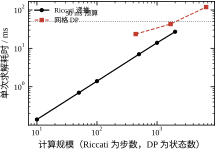
图 64-11 Riccati 递推（线性）与网格 DP（二次）的求解耗时
| 算法 | 规模 | 总耗时 / ms | 单位耗时 |
|---|---|---|---|
| Riccati | 10 步 | 0.149 | 14.94 µs/步 |
| Riccati | 50 步 | 0.689 | 13.79 µs/步 |
| Riccati | 100 步 | 1.369 | 13.69 µs/步 |
| Riccati | 500 步 | 6.933 | 13.87 µs/步 |
| Riccati | 1000 步 | 13.99 | 13.99 µs/步 |
| Riccati | 2000 步 | 29.74 | 14.87 µs/步 |
| DP（n=21） | 441 状态 | 28.15 | 0.798 µs/(状态·步) |
| DP（n=41） | 1681 状态 | 44.72 | 0.333 µs/(状态·步) |
| DP（n=81） | 6561 状态 | 125.81 | 0.240 µs/(状态·步) |
表 64-13 两类算法的实测耗时（Python/NumPy，单线程）
两条曲线的形状完全不同，含义也不同。
Riccati 是线性的：单步耗时稳定在 13.7–14.9 µs，总耗时随步数线性增长。2000 步（对应 T_s=0.01 s 下 20 s 的时域）只要 29.74 ms，仍在 50 ms 预算内。这意味着“每个控制周期重算一次 Riccati”在算力上是可行的，虽然按 §64.9.7 没必要那么做。
DP 是二次的：状态数从 441 涨到 6561（15 倍），耗时从 28.15 ms 涨到 125.81 ms（4.5 倍）——看起来比二次还慢，因为小网格时 Python 的解释开销占比大。折算到每状态每步，耗时从 0.798 µs 降到 0.240 µs，说明网格越大、向量化收益越充分。但即便按 0.240 µs 算，1% 精度的二维网格（7.29\times10^5 状态）也要 19.55 s，超预算 390 倍。
结论很清楚：LQR 可以在线算，DP 只能离线算。 这条界线不是“实现得好不好”的问题，是阶数决定的。任何“在线 DP”的方案，本质上都是离线算表 + 在线查表。
约束不是只有“限幅”一种加法，工程上有三档处理，复杂度递增：
第一档：事后硬限幅 + 抗饱和。 算出 u=-Kx，超过限幅就截断，同时把积分器（如果有）冻住或回退。这是最省事的做法，代价是 §64.6.4 的 3%–17% 性能损失。它的问题不在于“不最优”，而在于大信号时可能失稳：饱和使实际闭环增益变小，等效极点右移，极端情况下会振荡。
第二档：约束软化。 在指标里加惩罚项，比如把 R 做成 |u| 的函数（越接近限幅越贵），或者加一项 \rho\max(0,|u|-u_{\max})^2。这样解不会撞死边界，性能损失平滑可控，代价是要多调一个 \rho。
第三档：约束进最优性条件。 用 PMP 的 \arg\min_{u\in\mathcal{U}}H 或 MPC 的 QP，让约束参与求解。这是唯一“正确”的做法，也是唯一能给出最优性的做法，代价是计算量与实现复杂度。
边界条件要单独说。本章的算例是“调节到原点”，终端自由；真实任务常有两类终端要求：终端等式约束（必须精确到某点，如对接）和终端不等式约束（进入某个区域即可）。前者等效于 P_1\to\infty，会让末段控制量暴涨；后者可以用一个大的 P_1 近似。两者在离散实现里都要注意：P_1 太大时 Riccati 递推的数值条件变差，P 的元素可能到 10^{10} 量级，单精度浮点会溢出。
第一档“事后限幅”的技术核心是不要让它卷。加了积分器之后，限幅期间误差一直存在，积分器就一直累加；等误差终于反号，积分器里已经存了一个巨大的值，要很久才能吐回去。这个现象在 PID 里叫积分风卷（windup），在 LQI 里一模一样，只是积分增益 K_3 是 Riccati 算出来的、不像 PID 那样能随手调小。
三种做法的效果可以实测。取 LQI 增益 K=[2.414,2.414,1.000]（q_i=1），指令 1 m、限幅 |u|\le1，前 3 s 加一个 -0.9 m/s² 的外部负载（模拟“推不动”的工况），之后撤掉：
| 抗饱和做法 | 最大位置 / m | 调节时间 / s | 饱和总时长 / s |
|---|---|---|---|
| 不做处理 | 2.233 | 15.12 | 8.21 |
| 条件积分（饱和时冻结） | 1.747 | 10.52 | 3.96 |
| 反算法，T_t=0.1 s | 1.251 | 9.76 | 2.49 |
| 反算法，T_t=0.3 s | 1.551 | 10.13 | 3.00 |
| 反算法，T_t=1.0 s | 1.805 | 10.45 | 3.76 |
差别非常大：不做处理时位置冲到 2.233 m——指令只有 1 m，超调 123%，对一台有硬限位的设备就是撞机。条件积分把超调压到 75%，反算法（T_t=0.1 s）进一步压到 25%，调节时间也短了 36%。
反算的公式很朴素：
x_3\leftarrow x_3+\Bigl(T_sx_1+\frac{u_{\text{sat}}-u_{\text{raw}}}{T_t}T_s\Bigr) \tag{64-37}
括号第二项是“实际输出与期望输出之差”除以一个时间常数 T_t，它把积分器往回拽。T_t 的取法有讲究：取小了（0.1 s）拽得狠，退饱和快，但会牺牲一点静差恢复速度；取大了（1.0 s）拽得软，效果接近不做处理。实测 0.1 s 最好，0.3 s 次之，1.0 s 已经基本没用——这条曲线与 §64.8.6 的 K_3 一起决定了“要多快消静差”和“要多快退饱和”这两个互相牵制的指标。
工程上还有两条补充。第一，限幅值必须与执行器的真实能力一致。如果软件限幅 5 A 而驱动器实际只能出 3 A，抗饱和逻辑就完全失效，因为控制器认为“没饱和”。第二，积分器的初值要能预置。切手动时把 x_3 设成使 u 等于当前手动输出的值，切回自动时才不会跳（§64.10.7 的切换测试就是查这个）。
LQR 要求全状态反馈，但现场往往只能测位置，测不到速度（或者速度信号噪声极大）。这时需要观测器或微分器，把 x 重构出来，再乘 K。LQR + Kalman 滤波就是 LQG。
分离原理保证：观测器与控制器可以独立设计，闭环极点等于两者极点之并。这条定理让工程实现简单了很多——K 照 §64.7 的方法算，观测器增益照第 55 章的方法算，互不干扰。
但分离原理在有约束时不成立。饱和会破坏线性叠加，观测器的估计误差与饱和的非线性耦合，可能出现“观测器以为到位了、实际没到”的情况。工程上的对策是：饱和时同时冻结观测器的修正项（与抗饱和同一个思路），并给估计误差加监测。
差分测速的噪声账单值得单独算一遍，因为它是现场最常见的“莫名其妙抖”的根源。用位置差分估计速度，\hat x_2(k)=[x_1(k)-x_1(k-1)]/T_s，两个独立同分布的位置噪声相减，方差翻倍：
\sigma_{\hat x_2}=\frac{\sqrt2\,\sigma_1}{T_s} \tag{64-38}
代入 \sigma_1=1 mm、T_s=0.02 s，得 \sigma_{\hat x_2}=70.7 mm/s。乘上 K_2=1.732，控制量上就多了 0.122 m/s² 的抖动——占限幅的 12.2%，是 §64.6.7 里直接测速那 0.2% 的六十倍。这个数足以让电机发出明显的啸叫、让电流环反复触发限流。
更糟的是它与采样周期成反比：把 T_s 从 0.02 s 提到 0.005 s（采样快四倍），噪声涨到 283 mm/s，控制量抖动 0.49 m/s²，接近限幅的一半。“提高采样率”这个通常正确的做法，在差分测速面前会把噪声放大，这是很多人踩过的坑。
三条可行的替代路线，按代价从低到高：一是用编码器/M/T 法直接测速，从源头避开差分；二是在差分后加一阶低通，截止频率取 \omega_c 的 3–5 倍（本章约 6–9 rad/s），代价是引入约 0.03 s 的相位滞后，要从 §64.6.6 的延迟裕度里扣；三是上 Kalman 滤波（第 55 章），它同时完成滤波与预测，代价是要知道噪声统计特性、多花几微秒。对本章这种 T_s=0.02 s、T_c=1 s 的算例，第二条就够用；对高动态伺服，第三条是标配。
第一，增益的量级。 本章 K=[0.98,1.71]，量级温和。但 §64.7 的 r=0.01 给出 K=[8.96,9.91]，若对象是快速伺服（T_c=0.01 s），K 会到 10^4 量级。定点实现时要注意 Q 格式的选择，K_1x_1 与 K_2x_2 的量级可能差两个数量级，统一缩放会丢精度。
第二，累加顺序与量化。 u=-K_1x_1-K_2x_2 只有两次乘法一次加法，误差主要来自 x 的量化。位置 16 位 ADC、量程 1 m 时，量化步长 15 µm，乘 K_1=1 后控制量误差 15 µm/s²，相对限幅 10^{-5}，可以忽略；但如果 K_1=10^4，同样的量化会变成 0.15 m/s²，占限幅 15%，就必须用更高位 ADC 或先滤波。
第三，T_s 与离散增益的匹配。 表 64-9 已经显示，r=0.01 时离散增益比连续解低 10%，原因是 T_s\omega_n=0.063 已不算小。换采样周期必须重算 K，不能沿用旧值；反过来，如果代码里的 T_s 与实际中断周期不一致（比如用了标称值而实际有抖动），等效于增益失配，表现为响应偏慢或偏快。
一个可靠的实现应该分成两块，边界清晰：
离线块（上位机、初始化时跑一次）：读对象参数 → 检查能控性 → 解 Riccati → 输出 K、P、闭环极点、裕度 → 写入参数表。本章的 ch064_sim.py 就是这个块的原型，其中 lqr_continuous 与 lqr_discrete 两个函数是核心。
在线块（每个采样周期跑）：读状态 → 限幅判断 → u=-Kx → 输出 → 记录。这一段只有十几行，不应该出现矩阵求逆、迭代、动态内存分配。
分离的好处是可验证：离线块可以在 PC 上跑几百组参数、对比闭式解；在线块可以逐行审查、做最坏执行时间分析。混在一起的代码两头都验不了。
最后给一份可以照着做的清单，按顺序执行：
七条里最容易漏的是第 6 条。LQR 的输出是“绝对控制量”，切回手动时如果积分器（LQI 情形）没有预置，会产生一个大的跳变，现场表现为“切自动瞬间撞一下”。这个问题与算法无关，纯属工程细节，但它造成的停机比所有理论问题加起来都多。
清单是“投运前”的检查，投运后还得有一套判据，否则无法区分“参数没调好”与“结构不对”。下面三个指标都能从控制器内部直接读到，且都有本章算过的理论值可对，建议在头一周每天记一次。
指标一：饱和占空比。 用饱和标志位的置位时间除以整段运动时间。§64.7.7 的四档实验给出如下参考：
| r | 调节时间 / s | 饱和时长 / s | 占空比 |
|---|---|---|---|
| 10 | 0.398 | 0.256 | 64.3% |
| 25 | 0.281 | 0.124 | 44.1% |
| 50 | 0.302 | 0.105 | 34.8% |
| 100 | 0.496 | 0.083 | 16.7% |
这张表的用法是反向的：先测出现场的占空比，再去表里找对应的行，就能判断“当前的实际带宽相当于哪一档设计”。占空比超过 50% 时，线性二次型的整个推导前提（u 不受限）已经不成立，此时再调 Q、R 都是在调一个不存在的模型，应该直接转 MPC 或按 PMP 重算。占空比低于 10% 则说明执行器选大了，或者权重定得太保守，还有提速空间。
指标二：指令的噪声底。 稳态时（指令接近零、位置不动）记录 u 的均方根，与 K_1\sigma_1 对比。§64.6.7 给出的换算在四档噪声下分别是 0.0010、0.0020、0.0040、0.0100 m/s²。若实测值明显高于这个预测，问题不在控制器：优先查编码器量化（1 mm 分辨率经 0.02 s 差分测速会放大到 0.122 m/s²，是预测值的十倍以上）与速度信号的滤波是否缺失。这个指标的用处是把“抖动”从玄学变成可归因的量——是传感器、是离散化、还是增益太大，三者的量级差得很远。
指标三：稳态残差随 q_i 的变化趋势。 依次把积分权重提 10 倍，看残差是否也成比例下降。§64.8.6 的实测是 q_i 从 0.1 提到 1，残差从 5.2\times10^{-3} 掉到 3.8\times10^{-5}，降了两个数量级；但从 100 提到 1000 就几乎不动了。如果提 q_i 残差完全不降，那这个残差不是常值扰动造成的，而是模型偏差（比如丝杠间隙、摩擦死区），加积分器只会把积分量顶到限幅上，然后触发 §64.10.3 讨论的饱和问题。
三个指标的共同点是：都是结构性的，与曲线的形状无关，因此不受“看着还行”这类主观判断干扰。占空比回答“约束是否主导”，噪声底回答“测量链是否够干净”，残差趋势回答“扰动是常值还是模型错”。三个都正常，剩下的才是调参。
到这一节，本章的方法已经全部展开。最后要做的是判断“什么时候该用、什么时候不该用”——因为最优控制的名气远大于它的适用范围，误用的代价往往是“算得很漂亮、现场不能用”。
第一，有下界。 LQR 给出的 J=1.7321 不是“一个可行解”，而是所有线性状态反馈里代价最小的那个（在无约束、二次型指标下）。有了下界，任何其他方案的性能都可以量化比较：最短时间解贵 98%，能量最优解 T=4 s 时贵 14%。这种“绝对坐标”是 PID 给不了的。
第二，一次算完。 解一次 Riccati 只要 3.4 ms（240 步），得到的是常数增益，在线只需一次内积（14 µs）。没有迭代、没有初值猜测、没有收敛问题。这一点在工程上极其宝贵：它意味着控制器可以在上电时自检、可以在参数变化时重算、可以离线验证。
第三，裕度有保证。 单输入 LQR 的相位裕度不小于 60°、增益裕度不小于 6 dB（本章 72.38° 与无穷）。这不是“调出来的”，是结构保证的。对没有鲁棒性分析能力的团队，这条性质就是最基本的安全网。
第四，可解释。 协态变量是影子价格（§64.5.5），P 矩阵的对角元是“各状态的代价汇率”，\lambda 可以直接回答“该测哪个传感器”（§64.8.4）。这种可解释性让设计评审能落到具体的数上，而不是“我觉得响应还行”。
第一，不能含约束。 这是最硬的一条。本章的算例只在 x_1\le1 m 时约束不起作用，一旦幅值上去，性能掉 3%–17%，而且事后限幅可能失稳。想要约束进入最优性条件，必须换 PMP 或 MPC。
第二，要求全状态可测。 LQR 的 u=-Kx 需要每个状态。只有位置可测时，必须加观测器（第 55 章），而观测器在饱和时会破坏分离原理。
第三，只对线性、二次型成立。 对象非线性、指标不是二次型（比如最短时间、最小磨损），Riccati 就不适用。可以线性化后用，但那时“最优”只对线性化模型成立。
第四，权重难定，且不直观。 Q、R 与“超调多少、多快到位”没有直接对应，只能通过 T_c、\zeta 反算（§64.8.2）。相比之下，PID 的三个参数与响应特征的对应更直观——这是 PID 至今占主导的现实原因之一（见第 44、106 章）。
四条限制里，第一条被越过的次数最多，也最难自查。原因很实在：限幅是执行器的属性，不是模型的属性，所以在 A、B 里完全看不出来，仿真时如果忘了写饱和函数，曲线会漂亮得让人放心。本章的实测可以当作量化的警戒线：q_1=10^6、\|u\|\le20 的工况下，r=100 时无约束峰值 50.00，已经是限幅的 2.5 倍，此时实际调节时间 0.496 s，比 r=50 的 0.302 s 慢了 64%——同一个“更快”的直觉，在这里给出了完全相反的结果。所以每次缩 R 或加 Q 之后，都应该先算一遍无约束峰值，再决定要不要相信仿真曲线。
第二条限制则常以“看起来能用”的形式蒙混过关：位置可测、速度用差分，小信号下一切正常，一旦幅值上去，差分噪声按 1/T_s 放大（§64.10.4），指令开始抖，工程师误以为增益太大，于是降增益，结果响应变慢却仍然抖。这类问题的正确顺序是先补观测器或加滤波，再谈调参。
以下五种情形，用 LQR 是错的，或者至少不是首选：
这五条里前三条有明确的自查办法，后两条只能靠经验。约束主导可以用饱和占空比量化（§64.10.8 的 50% 警戒线）；强非线性可以看“同一组 K 在行程两端是否都稳”（本章 §64.9.9 的 g=0.6 与 g=1.4 两端，固定 K 的调节时间从 4.34 s 恶化到 7.75 s 与 5.16 s）；大延迟可以算延迟裕度（T_{d,\max}=0.695 s，超过它的 70% 就该考虑换方法）。后两条——模型不确定与状态约束——没有简单的标量判据，只能靠对工艺的了解来判断，这也是设计评审里最需要人参与的部分。
本章的方法处在一个“方法族”的中间位置，往两边都能延伸，但边界要清楚：
这四条边界可以浓缩成一句话：LQR 解决“已知模型、无约束、要定量最优”的问题，其余问题各有专责。
| 对象/工况特征 | 首选方法 | 理由 | 指向 |
|---|---|---|---|
| 线性、无约束、全状态可测 | LQR | 一次算完、有下界、裕度保证 | 本章 |
| 线性、执行器饱和主导 | PMP / MPC | 约束进入最优性条件 | 本章 §64.4、第 58/80 章 |
| 只有输出可测 | LQG | 观测器 + LQR，分离原理 | 第 55 章 |
| 弱非线性、工况窄 | LQR + 增益调度 | 分段线性化，每段一套 K | 本章 §64.9 |
| 强非线性、≤3 维 | 网格 DP | 唯一能全局最优的数值法 | 本章 §64.5 |
| 高维、多约束、需在线 | MPC | 滚动优化，终端代价用 P_\infty | 第 58/80 章 |
| 大纯延迟 | Smith 预估 | 延迟单独处理 | 第 47/107 章 |
| 模型不确定大 | H∞ / μ | 面向模型族而非单模型 | 第 63 章 |
| 单回路、无模型 | PID | 简单、经验成熟 | 第 44/106 章 |
表 64-14 最优控制与相邻方法的适用边界
这张表的用法是从上往下匹配：先看第一行能不能满足，不能就往下走。绝大多数伺服、运动控制问题在第一行或第二行就能解决，这也解释了为什么 LQR 在工程上“够用”。
最后收束一下。本章真正想让读者带走的不是 Riccati 的推导，而是三件更通用的东西：
一是“先写指标”的习惯。 任何“最优”都必须先有一个写下来的 J，否则“好”无法比较。本章表 64-1 的三个解之所以能放在一起，就是因为它们各自对应一个明确的指标。
二是“约束会改变解的结构”的直觉。 无约束解在内部，有约束解在边界；事后限幅不是“小改动”。这条直觉在遇到饱和、限速、限流时都用得上。
三是把方法当工具而非信仰。 LQR、PMP、DP、MPC 各有各的适用面（表 64-14），选错的代价远大于实现的精细程度。真正的高手不是“会用最复杂的方法”，而是“知道什么时候不用”。
前面各节分散地批评过若干做法，这里把它们集中成一张对照表。五条都是本章亲手算过的，数字直接引自对应的章内表格，不另做实验。这样做的目的是：遇到症状时不必从头推，直接查表定位。
| 错误配方 | 现场症状 | 根因 | 正确做法 | 本章可查 |
|---|---|---|---|---|
| 想快就减 R | 指令峰值冲到限幅的 5–8 倍，t_s 反而变长 | R 只影响“推力值多少钱”，不改变闭环极点比例 | 改 q_1 或 q_1/q_2 之比定带宽；先算无约束峰值，再看是否越限 | §64.7.3、§64.7.7 |
| 离散实现漏乘 T_s | P 比连续解大几十倍，K 看着“差不多” | 连续指标 \int 与离散求和之间差一个步长因子 | Q_d=QT_s、R_d=rT_s；用连续闭式解对拍，偏差 >5% 就查 | §64.2.6、§64.8.3 |
| 有常值扰动却不加积分器 | 稳态位置停在 d/K_1，加大 K_1 只能压到某一档 | 纯比例状态反馈对常值扰动没有零稳态误差的结构能力 | 扩成 LQI，K_3=\sqrt{q_i}；先按 d/K_1 估残差再选 q_i | §64.8.6 |
| 事后限幅当约束处理 | 阶跃后大幅超调、长时间贴限幅，甚至极限环 | 限幅破坏了“u=-Kx”的代数关系，积分器仍在累加 | 反算抗饱和，T_t 取主导时间常数的量级；并核对是否该上 MPC | §64.10.3 |
| 斜坡跟踪只补位置通道 | 稳态滞后约 K_2v/K_1，加大增益只换来振荡 | 速度通道的参考量没进前馈，误差被 K_2 放大成额外指令 | 位置与速度两个通道都加参考：u=-K_1(x_1-r)-K_2(x_2-\dot r) | §64.6.9 |
这五条有一个共同点：症状都表现为“某个量偏大或偏慢”，而根因都不在被调的那个参数上。所以调参之前先问一句“这个量在结构上由谁决定”，比反复试数快得多。
再补一条元规则：五个配方里有三个（减 R、漏乘 T_s、事后限幅）都能通过“与连续闭式解对拍”提前发现。双积分器这类低阶对象有解析解，是把数值实现钉在纸面上的最省事手段；对象再复杂，也至少能在某个简化工况下找到可比对的极限情形。
本章所有数字都来自两个脚本：ch064_sim.py 负责计算，ch064_figs.py 负责画图。前者不依赖任何控制库（除了 scipy.linalg.solve_continuous_are 做一次对拍），所有算法都是手写的，目的是让每一步都能被读懂、被改。
"D:\Anaconda3\envs\py311\python.exe" code/ch064_sim.py
"D:\Anaconda3\envs\py311\python.exe" code/ch064_figs.py第一条命令按顺序跑 11 组实验，把每个数字打印到终端；第二条读取同一批函数，生成 figs/ch064/ 下的 11 张图（每张同时输出 SVG 与 PDF）。
ch064_sim.py 的组织顺序与正文一致：常量 → 线性二次型 → 闭环仿真 → 最短时间 → 能量最优 → 动态规划 → 11 组实验 → main()。读代码时按这个顺序走，就不会在函数之间跳来跳去。
disc(Ts)：双积分器的零阶保持离散化，直接写出 A_d=\begin{bmatrix}1&T_s\\0&1\end{bmatrix}、B_d=\begin{bmatrix}T_s^2/2\\T_s\end{bmatrix}，不用矩阵指数。对双积分器这是精确的，不是近似。
dcost(Ts, r)：返回 Q_d=QT_s、R_d=rT_s。这个函数只有一行，但它是 §64.2.6 那个坑的补丁——把所有离散权重的定义集中到一处，就不会再出现“某一处忘了乘 T_s”。
riccati_finite(A, B, Q, R, n, P_term)：有限时域反向递推，返回 P_0..P_n 与 K_0..K_{n-1}。核心循环只有五行：
for _ in range(n):
S = R + B.T @ P @ B
K = np.linalg.solve(S, B.T @ P @ A)
P = Q + A.T @ P @ A - A.T @ P @ B @ K
P = 0.5 * (P + P.T) # 强制对称，抑制数值漂移
Ps.append(P.copy()); Ks.append(K.copy())最后 Ps.reverse()、Ks.reverse() 把下标转成“时间正向”，这样调用者拿到的 K_s[0] 就是 t=0 的增益。
lqr_discrete(A, B, Q, R)：同一个递推跑到收敛，返回 P、K 和迭代次数。收敛判据是 \|P_{n+1}-P_n\|_\infty<10^{-12}，上限 20000 步（防止发散时死循环）。
lqr_continuous(q1, q2, r)：用 solve_continuous_are 解连续 ARE，同时按式 (64-18) 算闭式解，两者放在同一个字典里返回。这个“双算”是刻意的：每次调用都自动对拍，闭式解写错会立刻暴露。
sim_closed(x0, K, gain, umax, Ts, t_end)：闭环仿真，支持对象增益偏差（gain）与控制饱和（umax）。返回轨迹、控制序列、调节时间、推力峰值、超调。调节时间的定义是“最后一次离开 2% 带的时刻”，这个定义要记住，它与“首次进入 2% 带”不同。
sim_open(x0, u_of_t, gain, Ts, t_end)：开环仿真，把预先算好的 u(t) 直接加到对象上。用于 §64.6.5 的对比。
switch_func(x1, x2)、min_time_analytic(x1, x2)：切换函数与最短时间的闭式解，实现式 (64-24)、(64-25)。
sim_bang(x0, Ts)：最短时间轨迹仿真。这里有一个值得说明的实现选择：不按符号函数闭环积分，而是先算解析切换时刻、再分两段积分。原因是离散闭环在切换曲线附近会抖动（本章第一版就出现过 147–228 次切换、t_f 恒为 20 s 的错误）。分两段积分后，结果与解析解逐位吻合（2.0000、4.1623、4.8284、1.4495 s）。
energy_opt_coeff(x1, x2, T)：式 (64-26) 的系数，三行代码。配套的 energy_opt_cost 算解析能量，energy_lqr_cost 把同一条轨迹代回二次型指标积分。
dp_solve(n, n_step, Ts, n_u, umax) 是本章计算量最大的函数。网格取 [-3,3]^2、每轴 n 点，控制取 9 档，反向递推 n_step 步。每一档控制都算一遍“当前代价 + 下一步值函数”，然后取逐点最小：
for u in us:
q1 = X1 + Ts * X2
q2 = X2 + Ts * u
cand = (Q1*X1**2 + Q2*X2**2 + R_U*u*u) * Ts + _bilin(ax, V, q1, q2)
Vn = np.minimum(Vn, cand)_bilin 是双线性插值，它对凸函数“上偏”，这正是 §64.5.3 里 DP 结果偏高的原因之一。dp_value 取单点值，dp_grad 用中心差分取梯度（即协态），两者都直接复用同一张网格。
| 函数 | 输出内容 | 正文位置 |
|---|---|---|
exp_lqr |
连续/离散增益、极点、J、穿越频率、相位裕度 | 表 64-1、§64.2.5、§64.6.2 |
exp_horizon |
六个时域的初始增益、峰值、末端偏差 | 表 64-5、图 64-5 |
exp_conv |
五个采样周期的 Riccati 收敛步数 | 表 64-7 |
exp_min_time |
五个初值的最短时间、切换时刻、代价 | 表 64-4、图 64-3、图 64-4 |
exp_energy |
能量最优的系数、能量、二次型代价 | 图 64-7、§64.4.5 |
exp_dp |
五档网格的 DP 值、误差、耗时 | 表 64-6、图 64-8 |
exp_dp_scaling |
误差阶拟合、1% 精度的网格与耗时外推 | §64.5.4、图 64-8 |
exp_costate |
DP 梯度与 2Px 的对照 | 图 64-9、表 64-11 |
exp_mismatch |
增益 ±20% 时开环/闭环的末端与调节时间 | 图 64-10、§64.6.5 |
exp_sat |
四档初值的饱和响应与最短时间 | 表 64-8 |
exp_weight |
九档 r 的增益、调节时间、代价 | 表 64-9 |
exp_realtime |
Riccati 六档、DP 三档的耗时 | 表 64-13、图 64-11 |
表 64-15 仿真实验与正文图表的一一对应
想把本章的代码用到别处，只需要改三个地方，其余不用动：
改对象：替换 AC、BC 两个矩阵，disc 改成通用的零阶保持（scipy.signal.cont2discrete），lqr_continuous 里的闭式解删掉（它只对双积分器成立），其余全部可用。
改指标：替换 Q1、Q2、R_U 三个常量，或者直接调 dcost(Ts, r) 的第二个参数。注意同时检查 T_s 是否满足 T_s\le T_c/10。
改初值：替换 X0。若要做大幅值工况，记得把 dp_solve 的网格范围 GRID_LO、GRID_HI 一起改，否则状态出界后插值会失效。
第 64 章的全部代码就这些。它不追求工程级的健壮性（没有异常处理、没有参数校验），但每个数字都能复现，每条结论都能追到具体的一次函数调用——这也是本书所有章节的一致要求。
想确认“哪些实验贵、哪些便宜”，直接给 12 组实验计时即可（Python 3.11 + NumPy，单线程，普通笔记本）：
| 实验 | 耗时 / ms | 占比 | 主要开销 |
|---|---|---|---|
exp_realtime |
391.5 | 25.7% | 六档 Riccati 递推 + 三档 DP 求解 |
exp_dp_scaling |
300.6 | 19.7% | 五档网格各重跑一遍 |
exp_dp |
297.0 | 19.5% | 同上，重复求解 |
exp_weight |
238.3 | 15.6% | 九档权重 × 各自闭环仿真 12 s |
exp_costate |
122.6 | 8.0% | n=81 网格 + 中心差分 |
exp_conv |
61.7 | 4.1% | 五档采样周期的迭代到收敛 |
exp_sat |
27.8 | 1.8% | 四档初值的长时域仿真 |
exp_lqr |
22.3 | 1.5% | 一次 ARE + 闭式解对拍 |
exp_energy |
18.7 | 1.2% | 五档时域的能量最优 |
exp_mismatch |
17.4 | 1.1% | 三档增益的开环/闭环 |
exp_horizon |
13.9 | 0.9% | 六个时域的有限时域递推 |
exp_min_time |
11.2 | 0.7% | 五个初值的解析 + 仿真 |
| 合计 | 1523.1 | 100% | — |
这张表本身就是一个结论：前四项占了 80% 的时间，而这四项全都在做“重复求解”（不同网格、不同权重、不同规模）。Riccati 本身只要 22 ms（exp_lqr），却被各实验反复调用了上千次。这与 §64.9.7 的教训是同一件事的两种表现：算法本身不贵，贵的是“为了画一条曲线而把同一个计算跑五十遍”。
反过来看，如果只是想知道“默认权重的 K 是多少”，跑 exp_lqr 就够，22 ms 出结果；整章 1.5 s 的耗时完全是为图表和交叉验证付的。验证比计算贵两个数量级，这在写论文和做设计评审时是常态，值得心里有数。
上面说“改三个地方就能用”，但改动过程中容易踩的坑值得单列。下面五条都是本章写代码时真实撞到过的，不是假设：
| 改动 | 表面现象 | 真正的原因 | 处理 |
|---|---|---|---|
用 dp_grad 在网格角点上取梯度 |
IndexError: index 81 is out of bounds |
中心差分需要左右邻点，边界点没有 | 只用内点；边界改用单侧差分或直接取 dp_value 的邻点差值 |
把 1 维 K 直接喂给 Ad - Bd @ K |
ValueError: matmul ... 2 is different from 1 |
sim_closed 内部会 ravel，矩阵运算不会 |
矩阵运算前手动 K.reshape(1, -1) |
| 沿用连续 K 但把 T_s 拉长 | 不报错，20 s 后位置 10^5，谱半径 3.59 | 离散闭环特征值跑出单位圆 | 按 §64.5.7 重新设计离散 K，或确保 T_s\le T_c/10 |
| 初值超出 DP 网格 | dp_value 返回边界值，梯度方向乱指 |
插值只在网格内有效，界外被截断 | 扩 GRID_LO/GRID_HI（§64.5.9），先让范围包住工况 |
| 终端代价 P_1 取 10P_\infty | 数值正常，但 x_1(T)=0.47 仍不达标 | 代价再大也突破不了物理可达集 | 先用 2\sqrt{x_1(0)/u_{\max}} 算时间下界，再定时域 |
前三行是程序级的错，报错或数值发散，容易发现；后两行是语义级的错，程序跑得通、曲线也平滑，但结论已经错了。真正拖时间的往往是后两行——它们不会让程序停下，只会让设计评审多开两次会。
所以验收的顺序应当是：先看数值有没有发散（谱半径、末态量级），再看物理上是否可能（时间下界、峰值是否越限），最后才看曲线好不好看。反过来先看曲线的，基本都会被“很平滑的错误答案”骗过去。
顺带说一句：上面五条里，第一条与第二条有明确的报错文本，可以直接在交接文档里当“故障码”查；第三条到第五条没有报错，只能靠事先算好的数值区间去卡。这也是本章反复给出解析下界（2\sqrt{x_1(0)/u_{\max}}、T_c、T_{d,\max}）的原因——数值方法可以省，判据不能省。